The Coaching Report Card
Michael's question: "Coaching is a tough one like how do teams grade that?" Here is what the data can and cannot grade so far.
You asked how anyone grades coaching. It turns out I had been quietly building the answer since July, and none of it has made it into a text until now. The TLDR:
- The best play-callers are more predictable, not less. Control for situation and the correlation flips sign. Andy Reid gets guessed three extra times per hundred plays and runs the best offense in football. Ben Johnson is the one real exception.
- Your Seahawks hunch holds up three different ways. Vegas priced them at 10.8 wins, they won 14, third biggest beat in football. Madden rated the roster 23rd of 32 and priced 7.5 wins. Draft pedigree had them 19th, with the league's biggest gap between talent and results.
- The warning label: beating the spread does not repeat (r = -0.03 across 654 coach-seasons). The market already prices the coach, so the roster models below are the better long-term measure.
- The career leaderboard passes the smell test. Wins above what the roster predicts: Belichick +4.2 per season, then Dungy, Harbaugh, Payton. Macdonald sits at +1.5 on two seasons, real but preliminary.
- Andy Reid is not a clock-management disaster. He has the best large-sample record at not dying with timeouts: 4 of 61 close losses vs a 15 percent league rate. The real sinners are Norv Turner (11 of 31) and Mike Martz (double the league burn rate, every season).
- Dead hypotheses stay on the board. Icing the kicker: 26 seasons cannot prove it works, and Pete Carroll's apparent edge is the fluke screening 21 coaches predicts. Establish the run: zero in every metric, including its three best counterarguments. Halftime adjusters: the skill repeats on paper but correlates 0.81 with simply having the better team.
- The strangest one: a roster's draft pedigree explains essentially nothing about how the team performs (r = 0.00 across 736 team-seasons). Payroll does better (r = 0.30), and Seattle beat that meter harder than anyone too, ranked 30th of 32 by paid talent.
Everything below is one board. Each card is a line from our texts, then what the data says, then the chart that answers that exact question sitting under it. Open questions say so and name the next move.
Every question, and what answers it
The sequencing file, 18 August
Nick's theory: "we have a theory that ben johsnons play sequencing is unique." Plus Michael's pre-snap question, his U-shape theory, his post-snap rotation questions, and the defensive side. What survived: the chain finding, the play-action volume, a McVay-only motion effect, a rising-rotation trend, and two leaderboards. The dead tests stay on the board with the evidence.
Michael: "Predictability is U-shaped. You don't want to be at the extremes…we are narrative pattern seeking creatures - if you are too unpredictable, then the narrative does not make sense, it's nonsensical. Your team needs a narrative and structure, but if you're too predictable, the other team will gain an edge on you." And: "So we need ways that McVay, Schnahan, McDonald, and Johnson are like this"
The U is not there, on any axis. Situational guessability, sequence guessability, defensive blitz guessability: three tests, and in each one the quadratic term fails, the information criterion prefers the straight line, and the flexible fit collapses onto it. Offense is monotonic (more guessable tracks better offense the whole way); defense is flat. But the second half of his sentence survives on its own: structure. Every elite name has a strong situational identity. The difference is what the opponent can do with it, and there are two roads: McVay and Shanahan run strong identities that are also guessable, and win anyway. Johnson runs the strongest identity in the sample with the least exploitability in the league, on both guessability axes. His ideal quadrant exists; it just has one man in it.
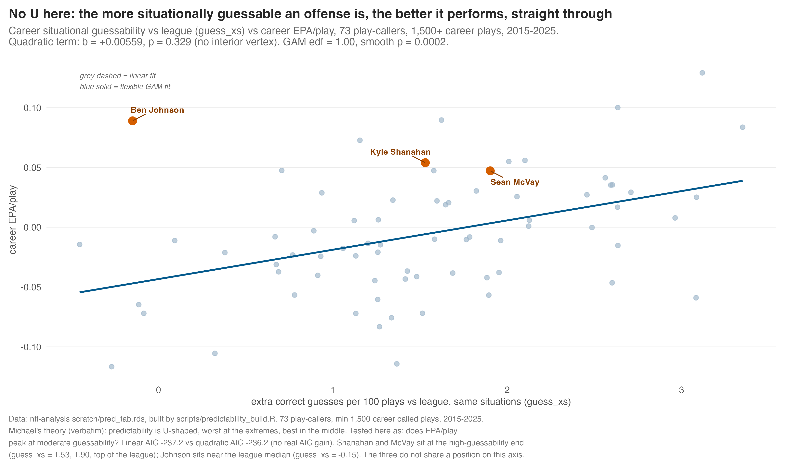
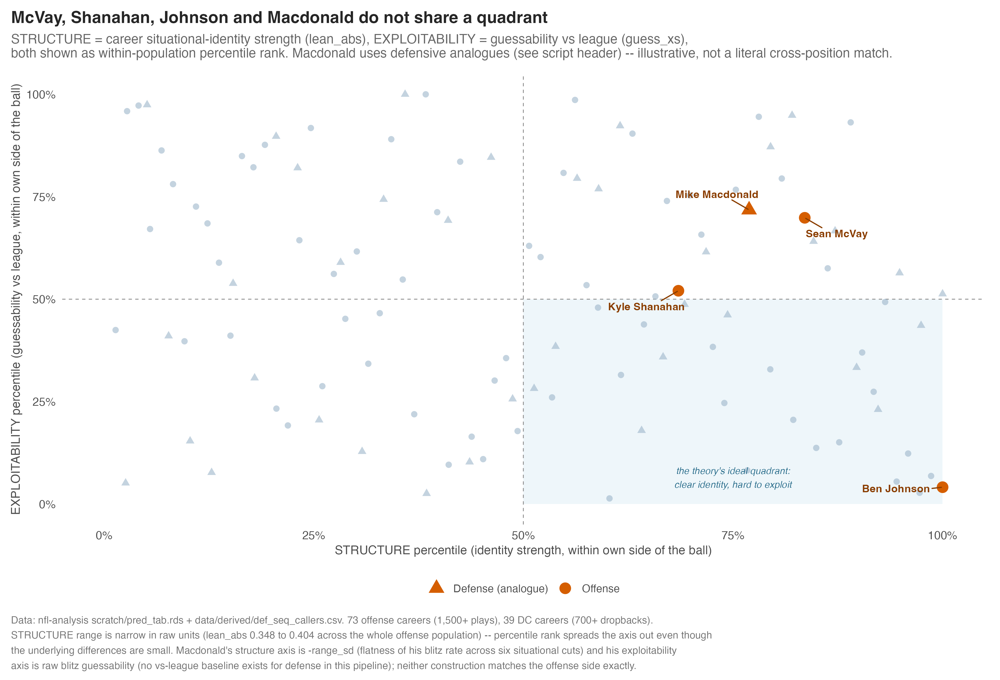
The catch: the structure measure's raw range is narrow (percentiles spread it out, the underlying differences are small), and Macdonald is placed with defensive analogues rather than the same measures, illustrative rather than literal.
Michael: "I wonder if post snap movement out of shell has increased over time…my guess is yes" ... "Also curious if EPA is down on plays where there is a rotation post-snap. That'd tell us if it's worth it."
Right on the first, and honestly empty on the second. Shell rotation rose from 29.1% of dropbacks in 2022 to 32.3% in 2025, climbing about a point a season with the interval clear of zero, and the charting's missingness is under 1.1% and stable, so the trend is real. The worth-it question comes back a genuine null: after situation controls, rotated snaps cost the offense one hundredth of a point of EPA with an interval spanning zero, in every split. Rotating is free, not proven profitable. Macdonald rotates 6 points more than his situations call for, 9th of 41 coordinators, and the trait persists at r = 0.91, the strongest repeatability number on this board.
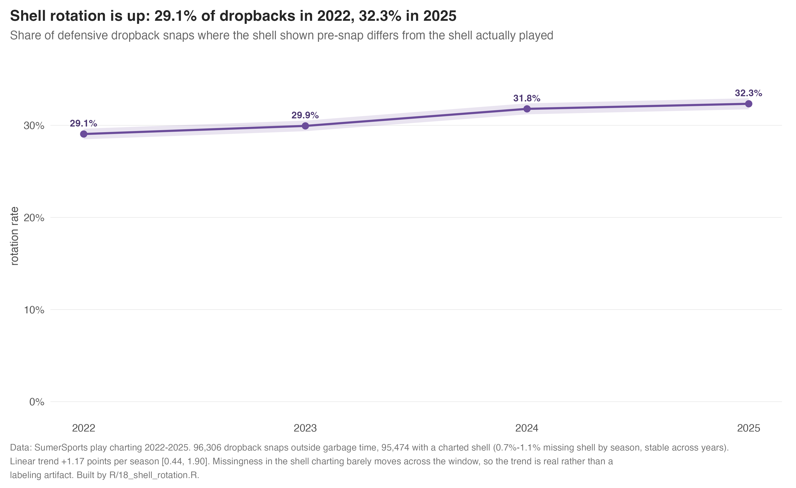
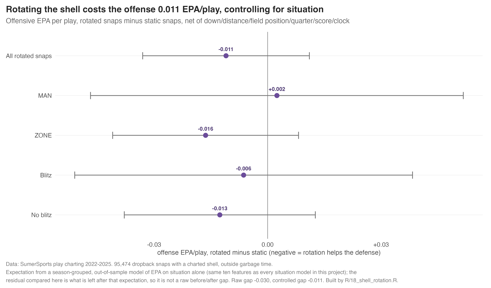
The film reel: his ten worst-for-the-offense rotated snaps are tabled with date, quarter and clock in data/derived/macdonald_reel.csv. The top three: a Week 10 2025 sack-fumble touchdown against Arizona, the Week 10 2023 pick-six against Cleveland, a second Arizona sack-fumble the same game. Fifth on the list, on merit: the Super Bowl interception of Drake Maye, fourth quarter, 8:49, open shell shown, closed coverage played. Checked against nflverse: Seattle 29, New England 13.
The catch: the reel ranks by outcome, and outcomes on single plays are mostly the offense's mistake plus luck; the rotation set the trap on these plays, but no single play proves the trap did it.
Nick: "Probably need a cowardly coach leaderboard. And a brave coach leaderboard"
Built on the clear-cut fourth downs, where the model says going is plainly better, era-adjusted so 2018 coaches are not punished for their time. The cowardly board: Jim Harbaugh, Matt Patricia, DeMeco Ryans, with Tomlin, Belichick and Carroll in the top ten and separable from their eras. The brave board: Kliff Kingsbury, Sean McDermott, Matt LaFleur, Dan Campbell. And the number for Michael's animator: Josh McDaniels is merely middling on clear-cut spots, but in the razor-thin band where nerve actually shows, he went for it once in seventeen chances.
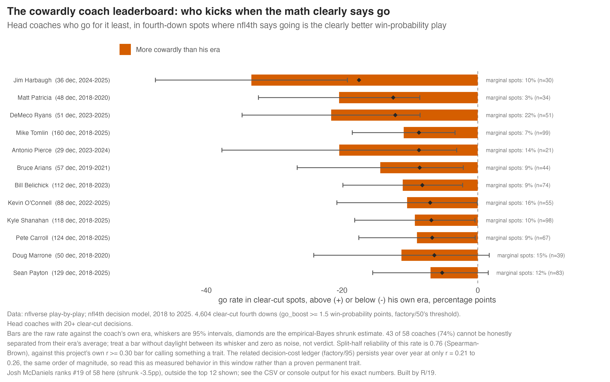
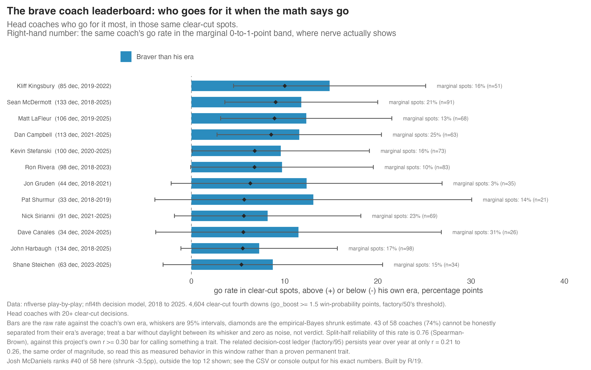
The catch: 43 of 58 coaches cannot be separated from their own era's average and both charts say so on their face. One point in the boards' favor: this go-or-kick rate repeats at r = 0.76 split-half, clearing the project's trait bar that the dollar-cost ledger fails.
The theory: "ben johsnons play sequencing is unique"
It is, in what it withholds. Measure how much a defense learns about the next call from the previous one, beyond the situation, and Ben Johnson gives away the least of any of 73 play-caller careers since 2015. Dead last, 2.3 standard deviations below the league mean, and it holds in every one of his four seasons, in Detroit and in Chicago. The average caller hands a defense about 1.2 extra correct guesses per hundred plays through his sequences; Johnson hands over 0.7. His calls are close to memoryless: knowing what he just did tells you almost nothing about what he does next.
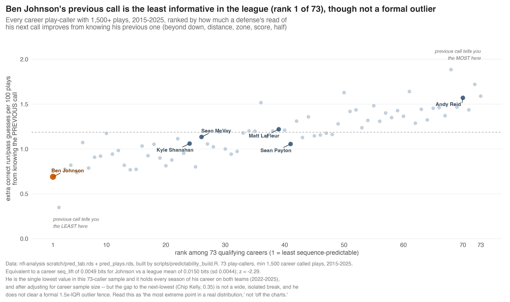
The catch: rank 1 of 73 is real and repeated, but he does not clear a formal outlier test; Chip Kelly sits close behind. "Most extreme in the league" is the defensible phrasing, "in a class of his own" is not. Four seasons is still a short career.
Pairs with the predictability cards below: situationally he is roughly league-normal to slightly hard to read. The sequencing is where he is genuinely extreme.
The romantic version of the theory: he runs early to set up the kill shot later.
Tested per caller, it exists for no one. A pass after a run in the same drive, at fixed situation, gains nothing across 95 caller careers. Eight callers clear their own noise band where screening 95 people hands about five to luck, and Johnson is not one of them; his setup effect is a rounding error with a wide interval, mid-pack in both directions. The league finding on the establish-the-run cards holds at the individual level too: the setup play is a story coaches tell, not a thing the data can find anyone doing.
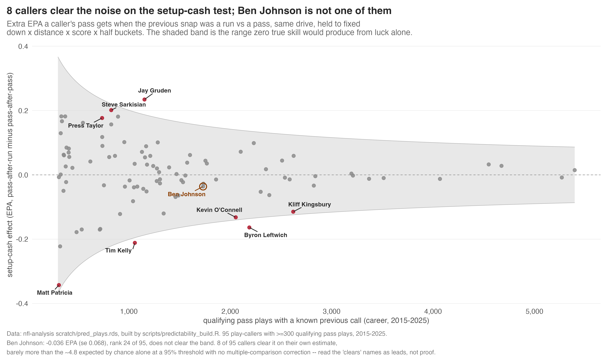
The other romantic version: the scripted first 15 plays are where the sequencer shows his hand.
Two results, both deflating. First, script skill barely exists as a trait: a caller's script edge this season predicts next season at r = 0.15, with an interval that nearly touches zero. Second, Johnson's own script edge is ordinary, 19th of 64, and his one big script year was his rookie season calling Detroit; it has been slightly negative every season since, including Chicago. The genuinely interesting pattern runs the other way: the famous scripters, Reid, Payton, McVay, Shanahan, LaFleur, all get harder to guess during their scripts. Johnson does not, because he has nothing to switch on. He is one of the hardest offenses to read in the league in the script, after the script, all game.
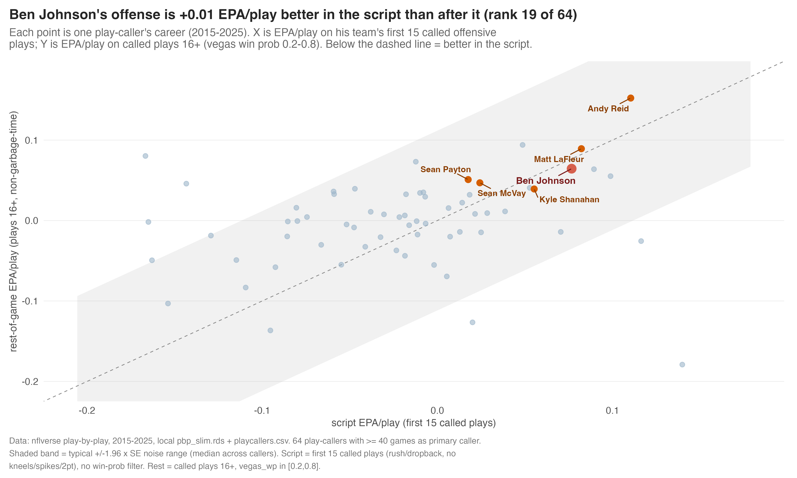
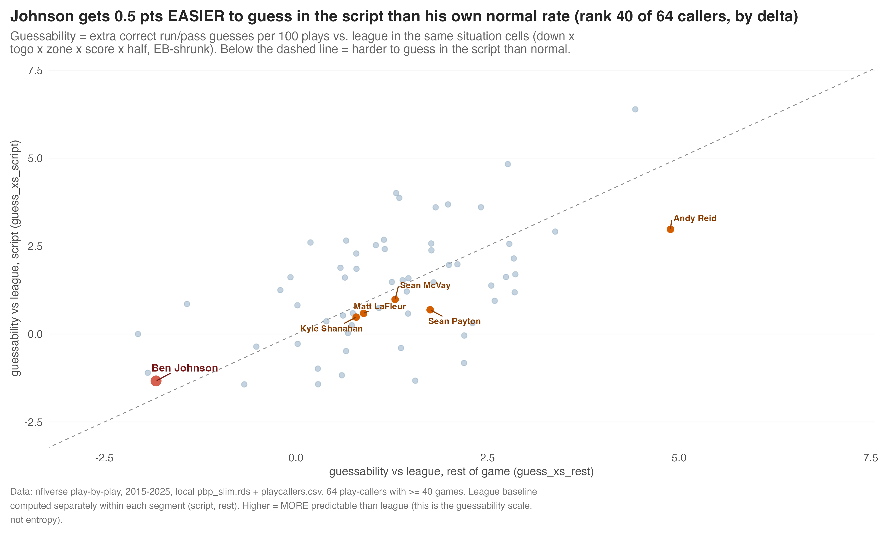
The catch: script versus rest is not a randomized comparison; script plays live earlier in closer games by construction. And his own confidence intervals are the widest of the marquee names, on 74 games.
The question: if his sequencing is unique, it should show up in what he calls.
Across six charted ingredients, exactly one is extreme. Early-down play action: 39.5% of his early downs, second of 35 callers in the charting era, against a league median of 31%. Everything else is league-normal or below; he uses less RPO and less no-huddle than the median caller. Two footnotes worth a beat in the video. His trick plays are only fifth by rate but carry the best payoff in the sample, over a full point of EPA each. And league-wide, play action works slightly better cold than after a successful run, one more nail from the establish-the-run coffin arriving by a new road. His own cold-versus-warm split is indistinguishable from zero.
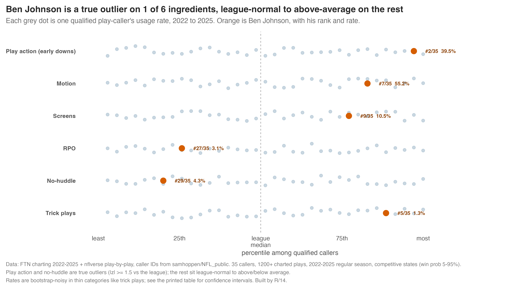
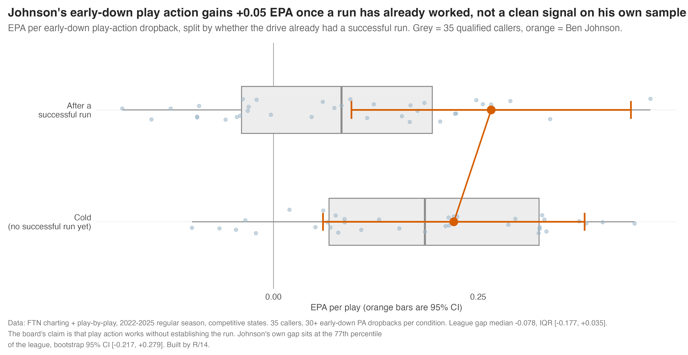
The catch: the same-look, different-play version of the theory tested null. His run/pass/play-action mix out of a given pre-snap look ranks ninth of 35 in diversity, and the interval overlaps the league median; the only pockets where he is clearly more diverse are second-and-short and third-and-medium.
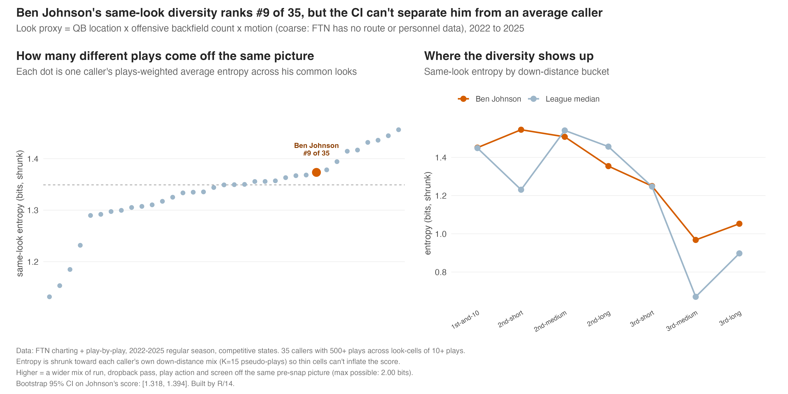
Michael: "What ways do you think we can quantify the McVay pre-snap movement and Schnahan?"
Nick, in the thread: "Does the model struggle to predict when those two have different motion types pre snap. Struggle to predict run v pass, play action etc."
Built exactly that, and it splits the two names. A pre-snap model reads run versus pass at AUC 0.84 across 139,311 plays. On McVay's motion plays it genuinely struggles: his motion-versus-still gap is sixth largest of 37 callers, and his interval clears zero comfortably. Shanahan, third-heaviest motion user in football, shows no such effect: below the league median, and his motion plays actually produce slightly worse EPA than his still ones. McVay's motion is camouflage; Shanahan's is choreography, moving blockers to where the play is going rather than hiding what it is. Johnson is unremarkable on this test too, which fits everything above: his encryption is in the sequence, not the pre-snap theater.
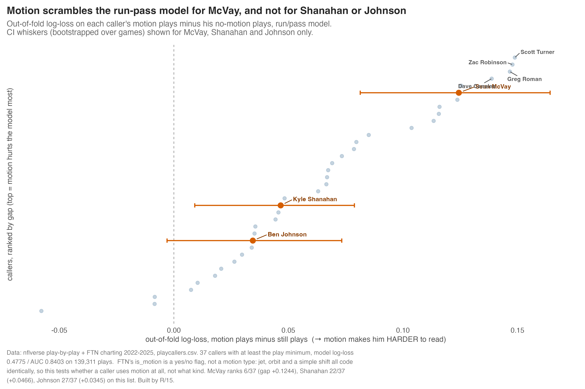
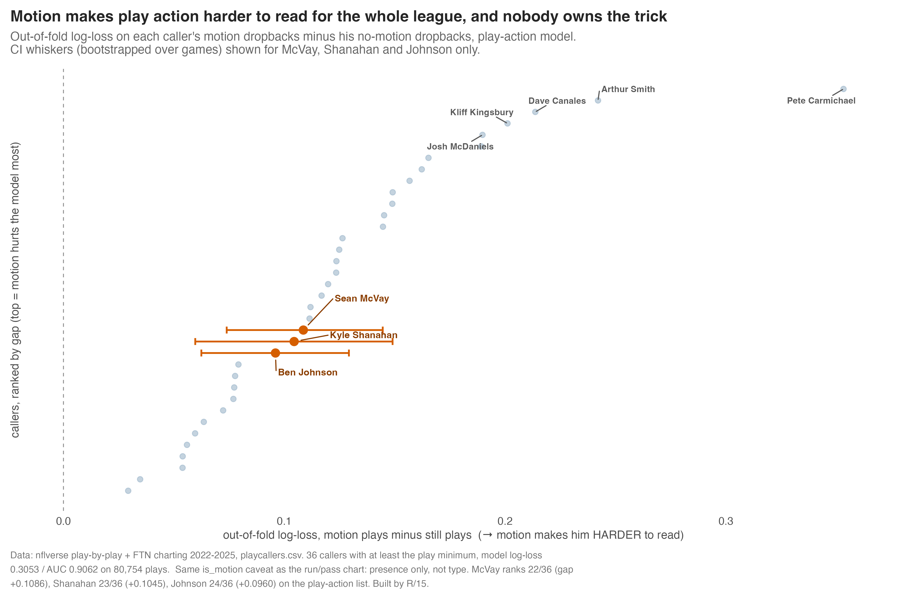
The catch: FTN's motion flag is presence-only. Jet, orbit and a simple shift all code identically, so this tests whether a caller motions, not which kind, and Michael's "different motion types" question stays open until a motion-type source exists. Sumer's play-level data has no motion type either; checked.
Michael: "Ya the McVay motion and movement stuff is like the next part of my writing so let me know when you have something here thanks"
Built from Sumer's per-player data, 4.8 million rows, first analysis on it. Nobody's data counts motions, so this measures the closest honest thing: how many different pre-snap looks a caller shows (every skill player's alignment, per play) and how much the look tips the coming play. Plain words on purpose; these are our measures built on Sumer's alignment charting, not Sumer stats. McVay's result is the surprise that makes his whole reputation make sense. He shows the 32nd-most-varied look of 36 callers, lives in bunched sets (55% of snaps against a league at 39%), rotates personnel the least of the three names, and his looks tip the play more than anyone's, first of 36 at revealing run versus pass beyond the situation. Put that next to the motion card above, where his motion is the one in the league that genuinely scrambles the pre-snap model, and the McVay formula is suddenly coherent: a small set of recurring, individually leaky shapes, with players moving inside them until the leak is bought back. The movement is not many looks. It is life inside a few.
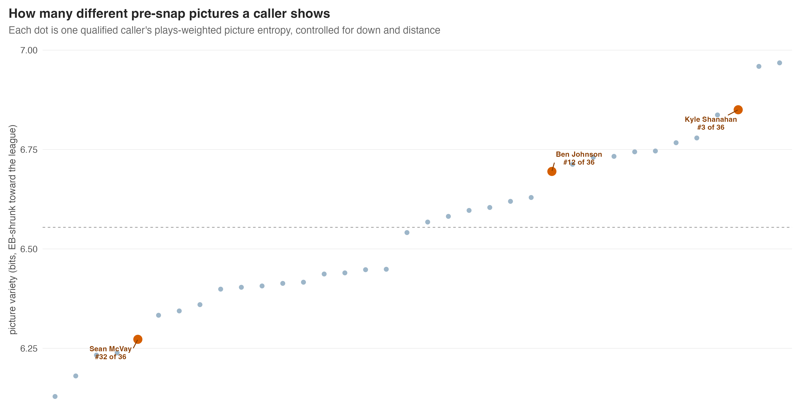
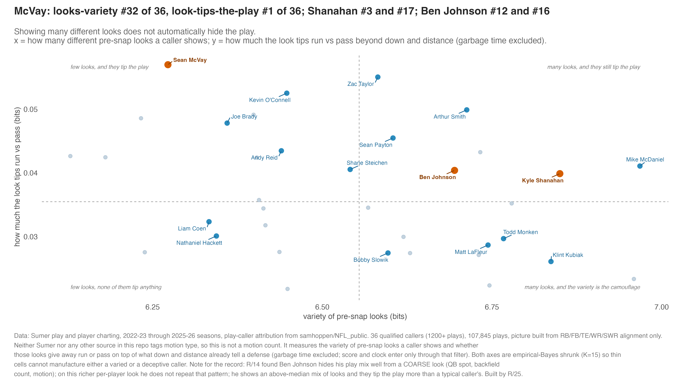
The other two: Shanahan is the mirror: third-most-varied look in the league, middle of the pack at tipping the play, deception by menu rather than by motion, which matches his below-median motion effect above. And an honest correction on Johnson: from the coarse look (backfield count, QB spot, motion flag), R/14 found he hides his mix well; on this richer per-player look he is above median on variety and above median at tipping the play. Different look, different answer, both on the board.
The catch: leak effects are real but small in absolute bits, in line with every tell measure on this board, and the no-motion-data disclosure applies throughout: this quantifies the looks, not the motion itself.
Nick: "im also curious about defensive play call sequencing too" ... "in different game situations etc."
Defensive callers have the opposite signature from Johnson. Blitzing the last snap makes blitzing this snap more likely for nearly every coordinator, beyond what the situation explains, by three to four points league-wide. Nobody meaningfully mixes against his own tendency. The surprise at the top: Vic Fangio, the league's disguise reputation, is among the heaviest chainers alongside Josh Boyer and Don Martindale, with Flores close behind; Macdonald sits toward the mixing end, 35th of 44. And this is a trait of the man, not the roster: a coordinator's situation-adjusted blitz identity repeats between his own odd and even seasons at r = 0.78. The payoff question still comes back empty, though: how guessable the blitz call is has no detectable relationship with the EPA a defense allows (r = 0.08, interval well across zero), unlike the offensive side where predictable calling tracks better offense.
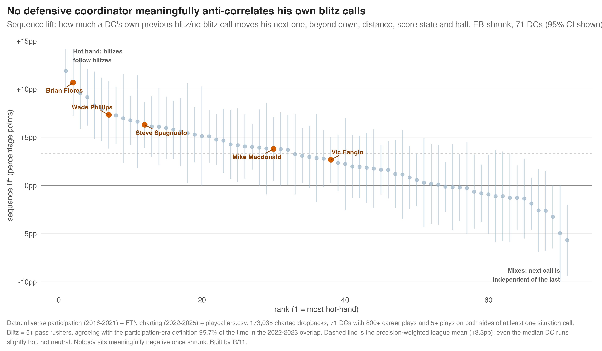
The aside worth a beat: Fangio and Macdonald are both more guessable than the median on the bare blitz-or-not decision, and Fangio chains his calls on top of it. The disguise reputation lives in the coverage shell after the snap, which the disguise cards below measure, not in whether the rush is coming.
The catch: the Sumer charting window is 2022 to 2025, so this is 44 coordinators with 700+ charted dropbacks and short tenures excluded, and the payoff correlation is two noisy per-coach estimates with a wide interval; read the null as "no signal found," not "proven zero."
The situational question: which coordinators call a visibly different game by spot, and which call the same one everywhere?
Macdonald is at the flat extreme, twice over. Across six situations (early down, late down, red zone, two-minute, trailing, leading) his blitz rate barely moves: 33rd of 42 coordinators in situational range, and below the league's rate in all six cuts. And by personnel, his 2023 Baltimore defense reshuffled between early and late downs less than all but one of 121 coordinator-seasons in the charting window, with 2022 also on the static side; his Seattle defenses sit at the league median both years. The flat profile is not a weakness on the evidence: those Baltimore and Seattle defenses finished second in the league in year two, per the card below from his outline. He does not morph by situation; he runs one scheme and runs it well.
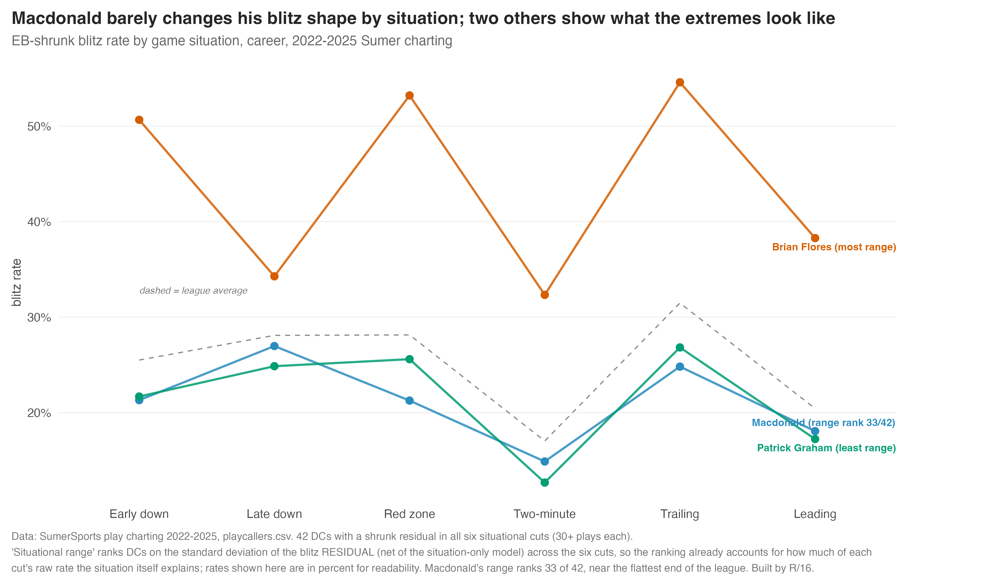
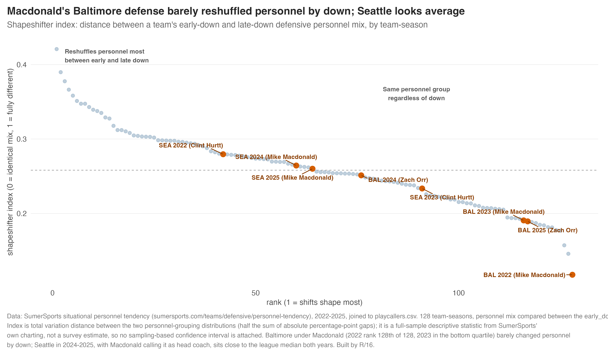
The catch: the personnel index is descriptive, with no interval attached, and it cannot separate a coordinator's philosophy from the roster he inherited; Seattle's move to median under Macdonald may be the players, not the plan. Worth knowing for trust: this measure was built twice, once from team-level tendency tables and once from the coordinator's own play-level snaps, and the Baltimore-static, Seattle-median story held both times, though which Baltimore year is the extreme moved (the play-level version, shown here, is the one to trust).
His two late asks, 18 August
"Where did the Hawks rank in all that?" and the Shanahan dossier. Both of his Shanahan claims checked out, one of them more decisively than he guessed.
Michael: "Where did the Hawks rank in all that?"
Sixteen measures, one picture. On every meter that prices the roster before the season, Seattle is at or near first in beating it: first of 32 above draft pedigree, first above payroll, second above the video game, third against the market, and Macdonald's career market rate is third of 157 eligible coaches. On the defensive side his signature holds everywhere it should: second of 41 in manufactured free rushers, ninth in shell rotation, bottom-third blitz rate, one game plan in every situation. The ledger also keeps the non-compliments in frame on purpose: the roster ranks 19th by pedigree, 30th by payroll, 23rd by Madden, and his halftime adjustment is flatly mid-pack, the one place the story finds nothing special.
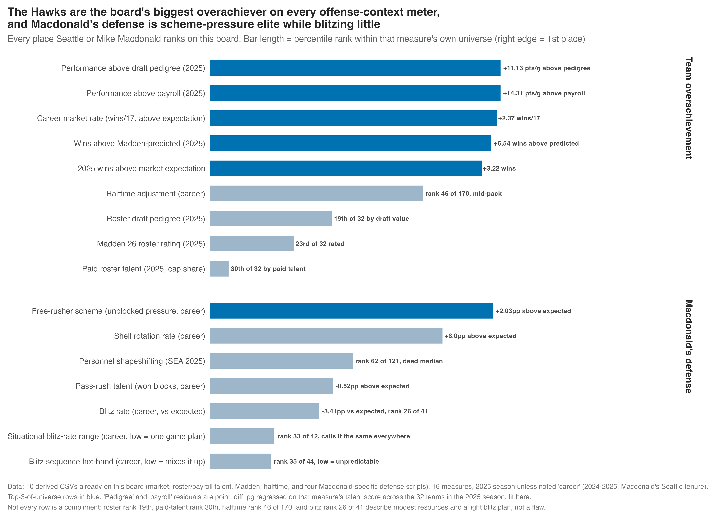
Michael: "What is our story on Schnahan? What makes him special? Do we have anything data wise on him? I have the obvious 'their WR1 was a fuckin runninback' and 'Mac Jones was just as good as Purdy' etc etc"
Both of his examples check out, and the second is the story. McCaffrey out-targeted the actual WR1 by 45 targets, up 46 percent, with 1,029 receiving yards; not close. And Mac Jones against Purdy in 2025 is statistically indistinguishable on 334 versus 363 dropbacks, with Jones's point estimates a hair higher on completion rate and EPA per dropback. One season of a backup's snaps, so suggestive rather than proof, but there is no gap to explain away.
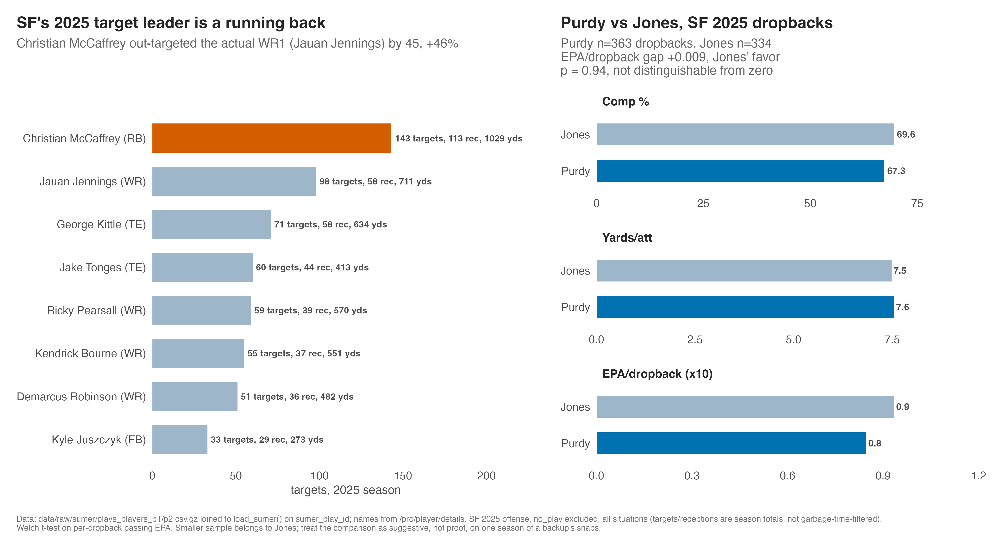
What the board says makes him special, assembled: the system, not the adjustment. His players grade second-best in football and his design still adds fifth-most on top, the data's answer to "it's just talent." He shows the third-most-varied pre-snap picture in the league, deception by menu rather than by motion. His scheme fingerprint barely moves year to year, 4th to 17th percentile of drift, because a complete system does not need to adapt. Out of his heavy set he throws more than anyone throws from it and blocks with an extra body at 2.2 times the league rate. He is top five at making a surprise pay on coin-flip downs. And the honest wrinkle that ties the dossier together: his career number against the betting market is slightly negative, because the market already prices all of the above. The Jones season is the system's proof: the quarterback changed and the offense did not notice.
The catch: the QB comparison controls for nothing beyond the topline rates (opponents and game states differ), and "the system makes QBs interchangeable" is one team's one season plus a career of priced-in expectations, a strong story with honest limits.
Deeper into the vault, 18 August
Nick: "we have all this sumer data… can you come up with more creative ways to use [it]?" Three never-used field families, three new instruments: the player grades, the QB clock, and the free-rusher flags. One completes an argument, one kills a theory, one solves the Macdonald puzzle.
Michael: "It's so entangled that it's obviously very hard to know or tell"
Sumer grades every player on every play, and that separates the two. One trap had to be dodged first: the same-play grade is mostly the outcome relabeled (it correlates 0.54 with the play's EPA), so each play is scored instead by its players' grades on all their other plays that season. Then every caller gets two coordinates: how well his players play, and the EPA left over after situation and execution are both priced, which is design. Shanahan is second in execution and fifth in design; Ben Johnson fifth and third; both elite twice over, which is the data's answer to "it's just the talent." McVay sits at the league median on both, one more sign his value lives in the motion and the calls, not in a design residual. The quadrants tell stories on their own: Zac Taylor's design carrying an ordinary roster, O'Connell and Payton with good players and no design edge, Hackett at the bottom of both.
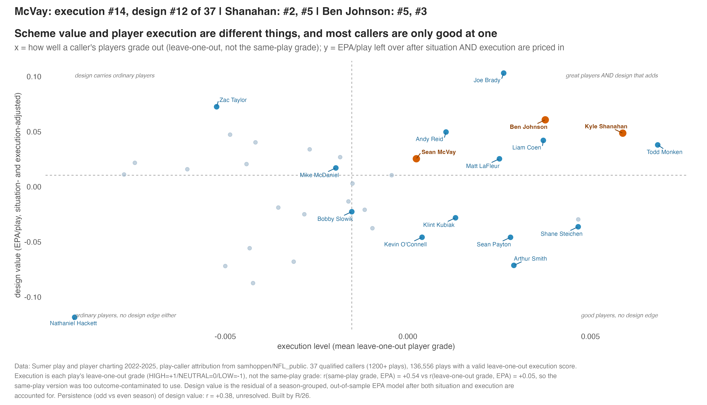
The catch: design value persists odd-versus-even seasons at r = 0.38, real but not settled as a trait; both axes correlate with career EPA, so they explain where a caller's EPA comes from rather than revealing new coaches; and the grade is three-level, so the execution axis is coarse.
Michael: "There's a lot more pressure post snap…and a lot less time…by shifting at this moment, it adds another mental task in a highly constrained environment. The later you can delay this, the better…(kirk cousins video)"
His theory is about time, so we tested time, and it joins the EPA null. Seven outcomes: time to throw, sacks, scrambles, throwaways, leaving the pocket, hurries, and time to pressure. After controlling for the real confound (rotated snaps simply see less play action and more blitzing), zero of seven move in the tax direction; pressure actually arrives slightly faster on rotated snaps and the QB does not hold it longer anyway. And his sharpest prediction, that play action should carry the biggest tax because the QB's back is turned, runs confidently backwards: the clock gap is smaller under play action, not bigger. One faint echo survives, thirty to sixty milliseconds against man coverage and blitzes, and it cashes out in nothing measurable.
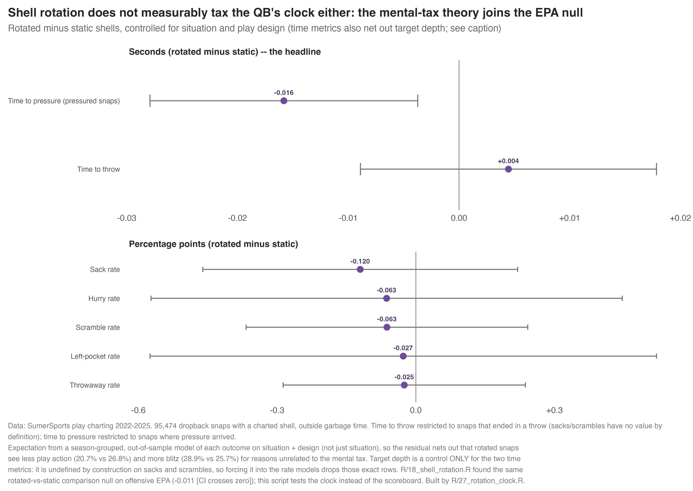
The catch: time to throw only exists when the ball was thrown, so a tax that showed up purely as sacks and scrambles would hide from that one metric; that is exactly why the full battery runs on all dropbacks, and it is null too. Rotation remains what R/18 said it was: real, rising, stylistically persistent, and unproven to cost anyone anything.
The puzzle: he blitzes below the league's rate in all six situations, and his defenses finish second in the league in year two, twice. Where does the pressure come from?
From rushers nobody blocks. Sumer flags whether a pressure came from a rusher who beat his block or a rusher who was never blocked at all. Macdonald ranks second of 41 coordinators at manufacturing unblocked rushers, above what his situations predict, while ranking 24th at winning one-on-ones and 26th in blitz rate. The free rusher is also the more valuable kind by a factor of three: minus 0.50 EPA to the offense against minus 0.16 for a won rush, and a won block only even turns into pressure 62% of the time, because the ball comes out. A standard four-man rush springs someone free on 2.9% of snaps; showing five and sending four doubles that; actually sending five triples it again. Macdonald's result is the interesting one precisely because he gets his free runners without pulling that lever.
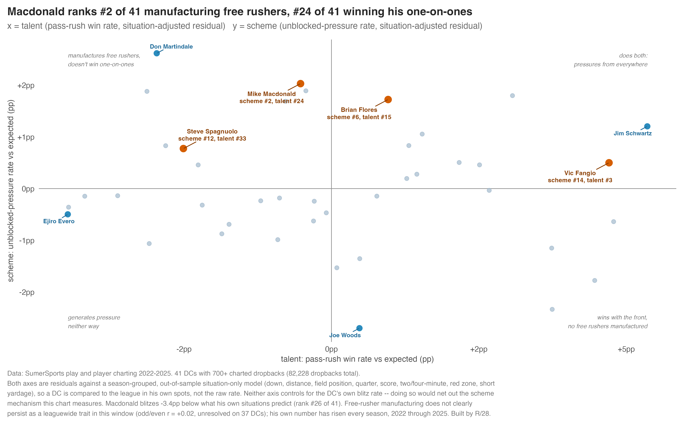
The catch: manufacturing free rushers does not confirm as a repeatable league-wide trait (odd-even r = 0.02, honest non-confirmation), though Macdonald's own rate has risen every season he has called a defense, 2022 through 2025. His story is strong; the general skill is unproven.
Four asks from the same afternoon: verify his Seahawks numbers, add the Rams to the 13-personnel picture, build the going-for-2 view, and check his guess at what a coach is worth. Two of his numbers verified, one got corrected into a better stat, and one hunch on each side of this conversation died.
Michael: "Pre-snap 2 high…for Seahawks can you verify this? 78% pre snap the most in the NFL…? League average is 52.5%. For first down alone it's 84%" ... "They only play 6% cover 1 (29th) and 33% cover 3 (31st)?"
Checked against Sumer, number by number. The spirit holds, the specifics do not. Seattle shows two-high on 85.5% of dropbacks, second in the league, not first; Philadelphia leads at 86.7%. First down: 88.9%, again second. His league average runs ten points below ours on both cuts, uniformly, which reads as his source drawing the shell line differently rather than a Seattle error. Cover 1 agrees in direction (they barely play it) but not size, and the Cover 3 rank is flatly wrong: 16th, dead center, not 31st. The stat worth keeping is what the correction uncovers: they show two-high on 85.5% and play it on 56.2%. A 29-point spin-down, sixth-most rotation in football. The story is not that Seattle sits in two-high. It is that Seattle advertises it and then leaves.
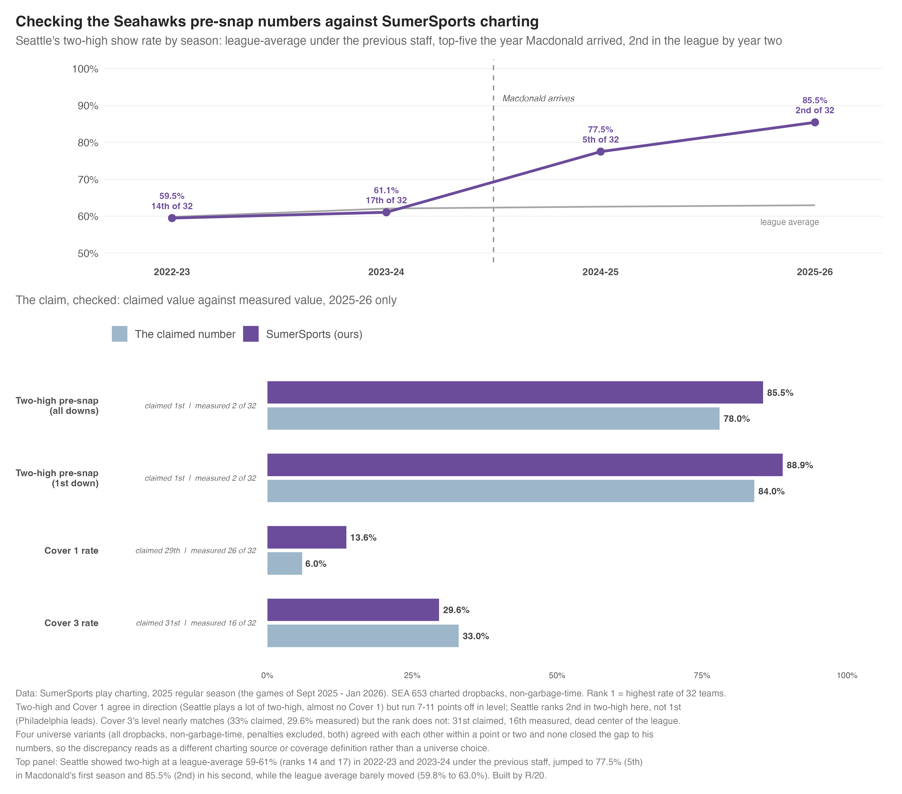
The catch: Sumer charts the shell only on dropbacks, so a source that charts run plays too would read lower everywhere; that is the likeliest reason for the level gap, and it cannot be tested from this data.
Michael: "it doesn't really make the case for 'Rams are dope at 13 personnel' - maybe add them in?" ... "I'm curious how good their pass/rush was against a light box and heavy box out of 13 too" ... "They were fucking nuts out of 13 personal. .50 EPA passing, .07 EPA per play running my god"
Both numbers check out inside our intervals (we compute +0.44 passing, +0.05 running; his tool counts garbage time, ours can go either way). The 2025 usage picture: nobody else is close, 26.1% of snaps against 12.0% for the next team, and their efficiency out of it ranks second behind Buffalo's much thinner sample. His box question finds the real story: defenses stack the box against the Rams' 13 personnel 72% of the time, and that is exactly where the Rams separate. Passing stays at +0.37 into a stacked box while the league sits at +0.03, and their runs hold break-even where the league gets stuffed. Those are the only two splits that clear significance. It is not that they are great everywhere out of 13; it is that the look defenses choose against it is the one it beats.
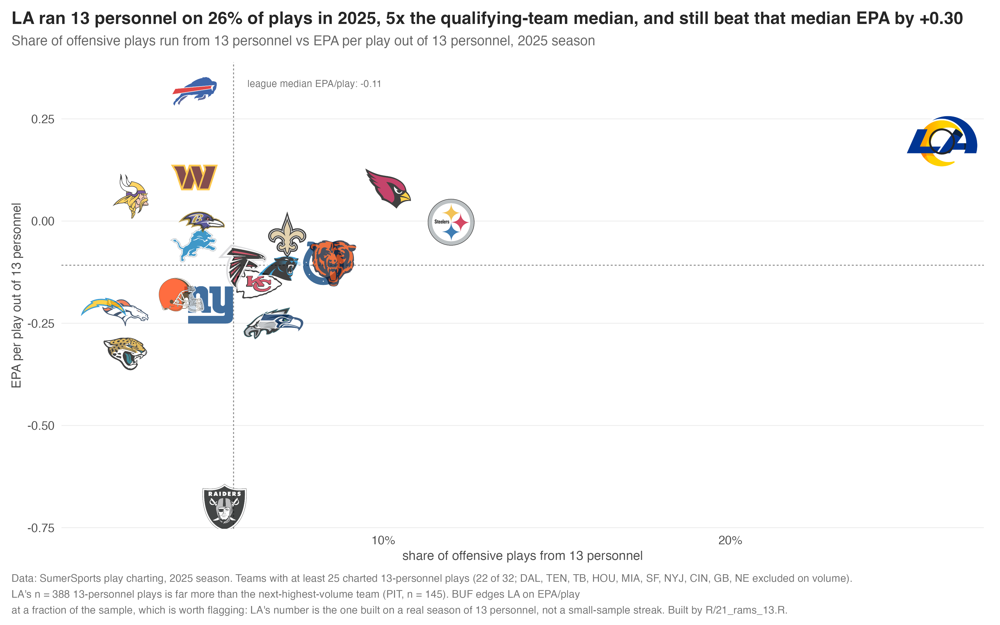
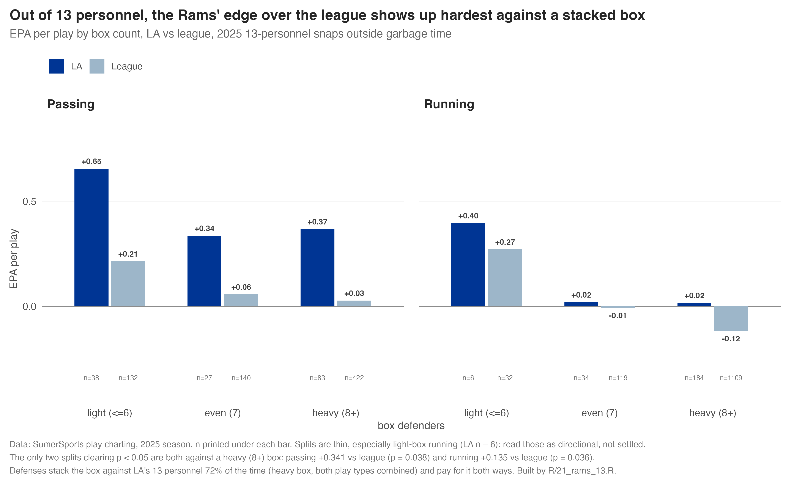
Michael: "Do we have anything on 2Pt conversions? Going for 2"
Nick: "Correlates really high with 4th down aggressiveness so can probably combine them to an extent. Like no one is aggressive on 4th down and conservative on 2pt conversions. But I can test that actually"
Tested, and the quadrant that was supposed to be empty holds 28% of the league. Andy Reid, Dan Campbell, Matt LaFleur, Sean McDermott and John Harbaugh are all brave on fourth down and conservative on two-point tries. The correlation is r = 0.10 with an interval spanning zero, nowhere near "really high." Two honest wrinkles worth the script's time: coaches obey the go-for-2 card 99.6% of the time in the fourth quarter and only 48.6% before it, so the card is a late-game religion and an early-game suggestion. And two-point tries are so rare (10 to 19 chart-says-go chances per coach across eight seasons) that "two-point aggressiveness" fails its own reliability test as a coaching trait; the fourth-down version passes at r = 0.76. One decision is a trait, the other is a coin that comes up a few times a year.
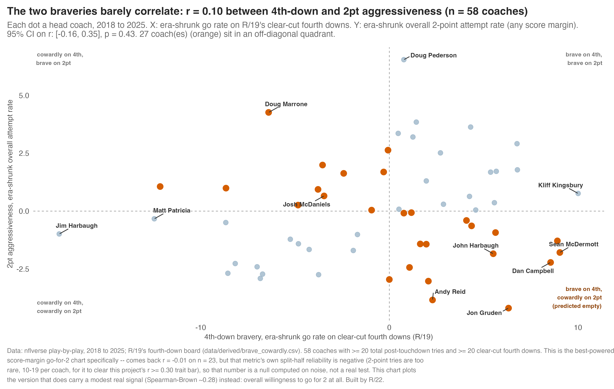
Michael: "I wonder how much a good OC/coach is worth… it certainly feels like there's an argument that they are the second most valuable person on the roster behind QB." ... "Like it 'feels' as if McDonald, Schanahan, and McVay are responsible for 3-4 wins a year. A WAR of 3-4 for the outlier guys"
The three measures on this board answer him with a ladder. Against draft pedigree, the loosest ruler, the all-time outliers do reach his band: Belichick +4.2, Dungy +3.0. Control for what the roster is actually paid and the ceiling drops under 3. Price the coach into the closing spread, the strictest ruler there is, and the sustained elite tier is about one win a season. The stricter the control, the smaller the coach. And the three men he named never clear +1.7 on any ruler; Shanahan's career number against the market is slightly negative, which is the measured version of "he keeps getting priced as a genius and performing to the price." His 3-4 win coach exists only in the measure that cannot tell coaching apart from roster-building.
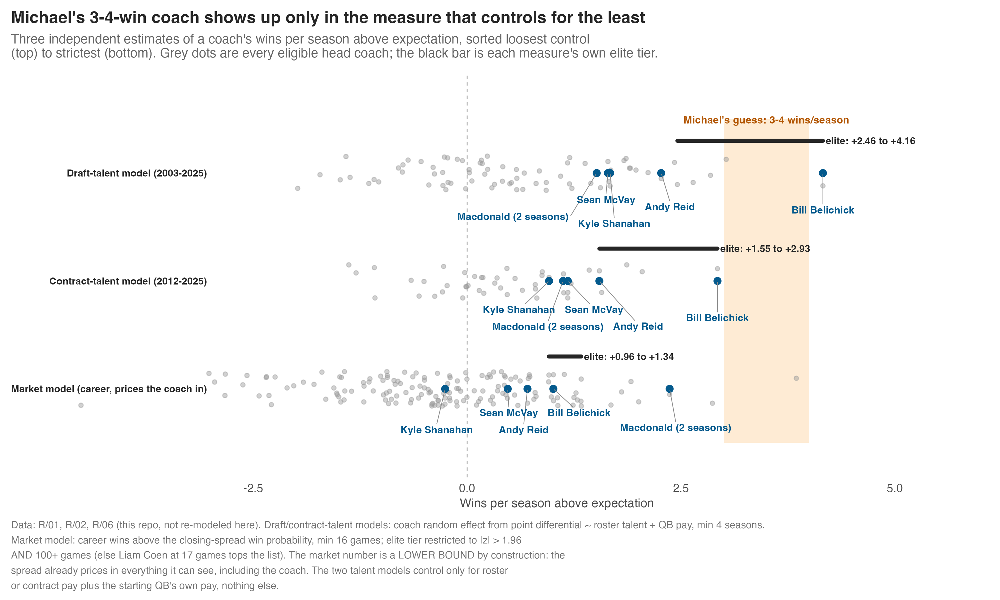
The catch: "second most valuable behind the QB" is directionally plausible but unproven here; nothing on this board builds the QB-value ladder to compare against, and the one adjacent number we have (the QB index running roughly ten times the coaching residual in the leverage model) points the same cautious way. The market number is a lower bound by construction. Nick's next lead: recreating the Hermsmeyer scheme-coefficient model, on the ideas list.
The correction, from auditing our own chart: Belichick's +4.2 on the top ruler is mostly Brady wearing a pick-199 price tag. The draft model prices quarterbacks by draft slot, so two decades of the best quarterback ever register as winning without QB investment. Split the eras and the number confesses: with Brady he grades +4.9; post-Brady, on a 29-38 record, he grades +0.5 under the same control and slightly negative once the QB is priced by his actual play, both at or below the +1.01 market floor. The mechanism generalizes exactly as it should: Carroll shrinks with Wilson, Payton with Brees, Garrett with Romo. The ladder's lesson gets sharper, not weaker: the loosest ruler does not just flatter coaches, it hands them their quarterback's outperformance of his draft slot.
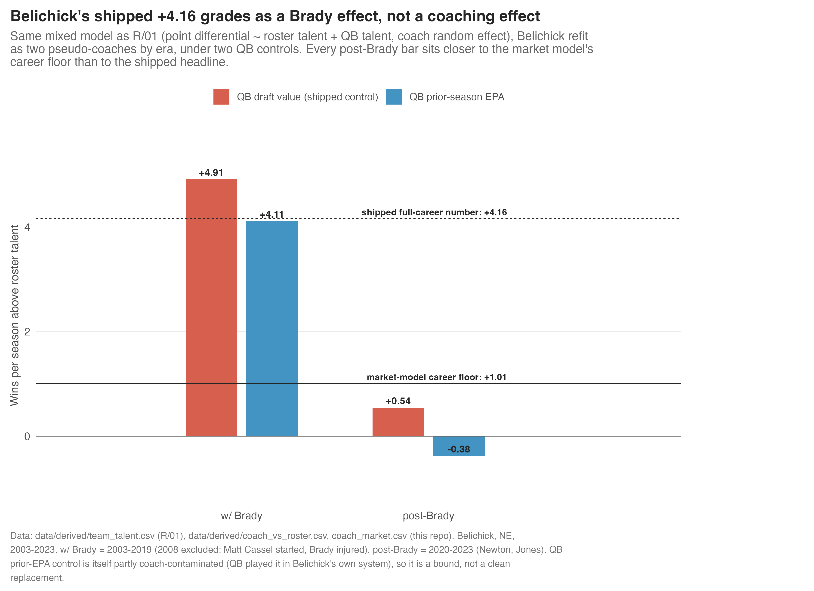
Michael: "everyone else kinda sucked at this while the Rams were insane. So what were they doing out of it?" ... "Wtf does Kyle do" ... "What ways do you think Schnahan adapted in 2025?"
The Rams out of 13 are running a different playbook, not a better version of the same one. Their runs are man and gap blocked at 40.6% against a league at 17.7%, they called zero power runs out of it all season while the league lives on power, they are under center 89% of the time, their play action fakes inside zone at four times the league rate, and they treat 13 as a passing personnel: lower run rate than the league uses it at, more deep shots. Eight of nineteen playbook metrics separate at p below 0.05, and the league baseline excludes LA so they are not graded against themselves.
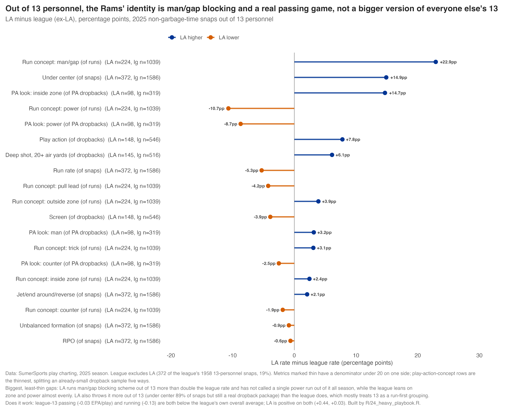
And Kyle does not play 13 at all. Eight snaps all season. His heavy package is 21 with the fullback, a third of his snaps, from which he throws more than the league throws out of 21, runs outside zone at +16 points over the league, and uses less play action than anyone's 21. Two mutually exclusive routes to heavy: LA adds a third tight end, SF adds a back. And measured against the whole league's extra-blocker rate on runs, SF at 69% is the more extreme extra-blocker team (2.2 times the league's 32%), even though LA at 47% gets the personnel-innovation headline. Michael's "everyone else kinda sucked at this" also now has its direct test: league passing out of 13 is negative while LA sits at +0.44 (p = 0.0003), and league running out of 13 is well underwater while LA is positive. SF's version works less cleanly: his 21-personnel passing beats the league's, but his running out of it is statistically even with everyone else's despite the outside-zone identity.
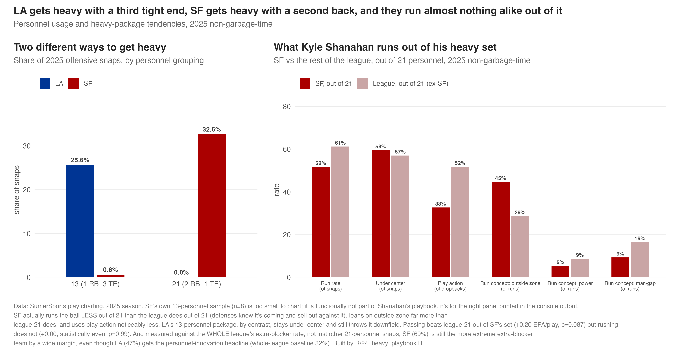
And Shanahan did not adapt in 2025, which is Nick's point made measurable. Across a nine-metric scheme fingerprint, all three of his season-to-season transitions sit below the league's median drift for coaches who kept their jobs (4th to 17th percentile). McVay's 11-to-13 pivot sits at the 98th, which is what actual adaptation looks like on this ruler. Shanahan's stability is the signature.
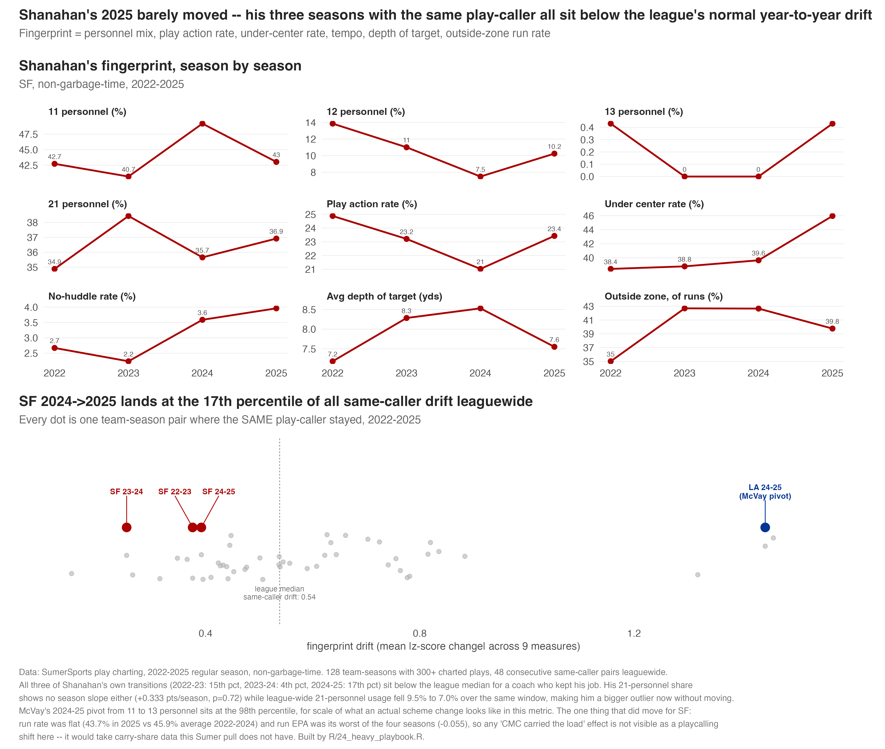
The catch: play-action concept cells get thin (LA has 98 PA dropbacks out of 13, split five ways), flagged in the data; and SF's 2025 run EPA was actually his worst of the four seasons, so "CMC carried the load" shows up nowhere in the play-calling data either way.
Rebuilt properly, 17 August
Everything above stands. This is the same set of questions run through a proper modeling setup, so where a card up there and a card down here disagree, trust this one. Full diagnostics live on the Model Factory tab.
The approach, from Eric Eager via you: "I would start w what would the average coach do given situation and take the residual."
Built: six models that predict what the average coach does from the game state alone, on 381,266 called plays from 2015 to 2025. Down, distance, field position with the red zone and the ten flagged separately, score, clock with two-minute and four-minute flagged, timeouts, and the spread. Everything a coach does beyond that prediction is his residual.
The part that matters: a residual only means something if the model is right about the situation. So every model is graded against five rules before anyone reads a leaderboard off it, including out-of-sample calibration and a check that it is not quietly wrong inside the ten. Two of six passed all five. The other four are shown with their failures printed on them rather than left out.
Rubric, scorecard, calibration curves, per-feature diagnostics and permutation importance: the Model Factory tab.
Michael (outline): "What Sean McVay did: Led NFL in 11 Personnel... Led NFL in 13 Personnel."
Both true, and never in the same season, which is the story. He ran 11 personnel on 92% and 95% of snaps in 2022 and 2023, the most extreme in football both years. In 2025 he dropped to 61% and put 29% of his plays in 13 personnel, again the most extreme in football, against a league average of 5%. His offense went from -0.09 EPA per play to +0.12, the best of his run. Within 2025 his 13-personnel snaps produced +0.18 against +0.10 from 11.

Why this is the Adaptability section: nobody else in the charting era moves like that. It also explains the swings in his pre-snap tell up above. There is no settled McVay to measure, because he keeps rebuilding.
Michael (outline): "MacDonald (defense): The overachievers (how much have his teams overachieved defensively?) Ravens / Seahawks."
He has done the same thing twice. Ordinary in year one, second in the league in year two, at both franchises. Baltimore went twelfth then second, Seattle eleventh then second. Career EPA per play allowed puts him second of 75 defensive play-callers, behind only Wade Phillips, on fewer snaps than anyone near him.

Why it is worth a chart rather than a sentence: there is no league-wide year-two effect to hide behind. Across 96 stints where a coordinator got two seasons at the same club, year two is no better than year one, 43% improve and a paired test gives p = 0.32. His jumps sit in the 94th and 91st percentile of every stint, with different rosters in different conferences.
The limit: two stints is two data points. The claim is only that landing in the top tenth twice is unlikely to be luck, not that we have found his method.
Michael (outline): "Is play action more effective out of 13 personnel? Would assume better?"
The opposite. The play-action edge is +0.117 EPA per dropback out of 11 personnel, +0.089 out of 12, and -0.005 out of 13. Nothing at all from the heavy look.

Why: callers run play action on 52% of their 13-personnel dropbacks. Once you fake it half the time from a look, the look stops being information. It is the same lesson as the pre-snap tell work, arriving from a different direction, and it is a good beat for the Deception section.
Michael (outline): "coaches always punt when they should... and VERY RARELY 'Go for it' when they should NOT... playcallers will justify a punt in a 'go for it' situation, but not the other way around."
Right, and it gets worse under pressure. On clear-cut fourth downs the league is 98.8% correct when the math says kick and 49.8% correct when it says go. In the highest-leverage quarter of plays the go-for-it number falls further, from 51.5% to 44.6%, while the kick number does not move. Controlling for the type of decision and the size of the edge, that drop is significant at p below 0.0001. The playoffs are worse again.

What it does not show: that being good at this wins games. Coaches who handle these well do not measurably beat the closing spread, and the measure is too noisy between coaches to settle the question either way. It is a real pattern in behavior, not a proven source of wins.
Nick's ask: a leaderboard of value tied back to decisions rather than to outcomes.
Fourth down is where that is possible. The model prices going, kicking a field goal and punting, so a coach who punts when going was worth four points of win probability is charged four points at the moment he chose, whether or not the punt then pinned them at the one. Execution is stripped out entirely. Across 2018 to 2025 the league has thrown away about 100 games' worth of win probability this way.

Three things this is careful about, because the first version got all three wrong and the ordering changed when they were fixed. The league got 31% sharper between 2018 and 2025, so every coach is scored against his own seasons rather than a pooled average. The whiskers are there because about half of these names cannot be separated from average. And the cost is priced against all three options, not just go versus kick, which had been letting everyone punt for free when the field goal was better.
The catch: this measure repeats from season to season at about r = 0.24, below the 0.30 bar the project uses elsewhere. Treat it as a description of how a coach has behaved, not yet as a settled trait.
Nick's ask: a breakdown of the coaching greats, modern and legacy, and the worst of all time.
Ranked on wins above what the market expected, which is the strictest available test because the closing spread already prices the roster, the quarterback and the schedule. Raw rates cannot be ranked, so each is regressed by how noisy that coach's own record is. Belichick, Tomlin, Dungy, McDermott and Reid at the top; Hue Jackson, Norv Turner, Rod Marinelli and Dennis Allen at the bottom.
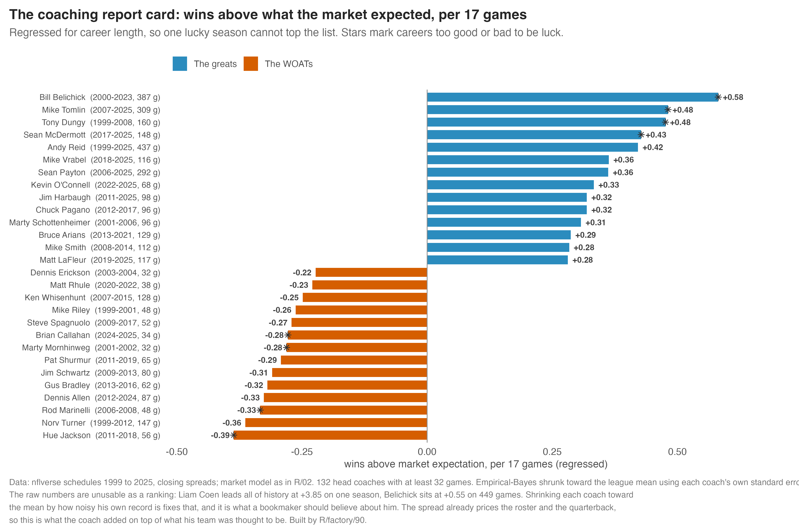
And the part worth building a segment on: nobody is good at everything, and the disagreements are the interesting bit. Belichick is +2.5 standard deviations at beating the market and -1.7 at fourth down. Reid is the mirror image, elite on offense and poor on the math. Macdonald and Campbell are strong exactly where the old guard is weak.
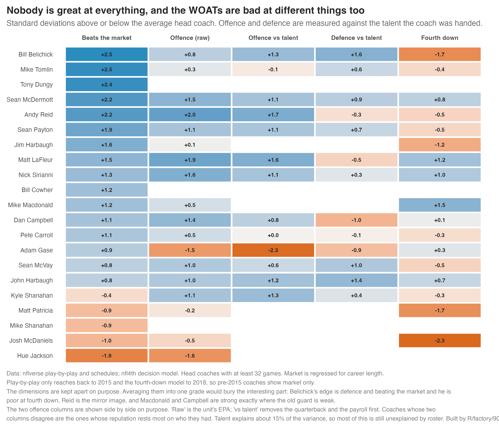
On the ordering: eight of 132 coaches sit outside a 95% luck band, and chance alone would put about seven there. So read the ranking as the best available estimate, not as proof that these particular names are separable from each other.
Nick: the offense and defense numbers were raw team performance with a coach's name on top, which is mostly a question about the roster.
Now adjusted. Each coach-season's performance is regressed on quarterback quality, using last season's EPA and completion percentage over expected, contract share and draft slot, plus the team's cap allocation. Every control is lagged or set before the season, so none of them is contaminated by the year being explained. Together they account for 15% of the variance in a coach-season's offense.
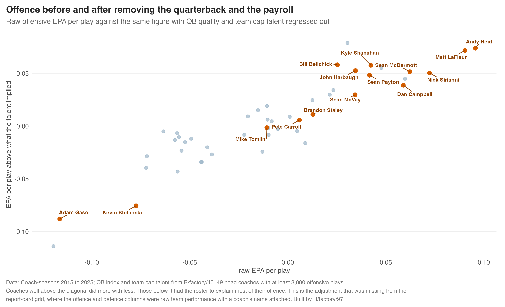
It moves people. Belichick goes from +0.8 to +1.3 standard deviations on offense once his roster is accounted for. Tomlin goes from +0.3 to -0.1. Mike McDaniel drops nineteen places. Adam Gase, already the worst in the group, gets worse. The grid above shows raw and adjusted side by side so the size of the correction is visible.
The proxies were tested one at a time as well as combined, because they disagree: where a quarterback was drafted correlates about 0.00 with how he actually plays, while what he is paid correlates 0.39.
Nick's ask: playoffs, late game, late half, late down, big swings, per coach and league-wide.
League-wide first. Offenses are mildly positive on an average snap and sharply negative on third and fourth down and in the last four minutes. The penalty for pressure has not shrunk in a decade. Playoff numbers run positive, but that is the teams that get there being better rather than anything about January.
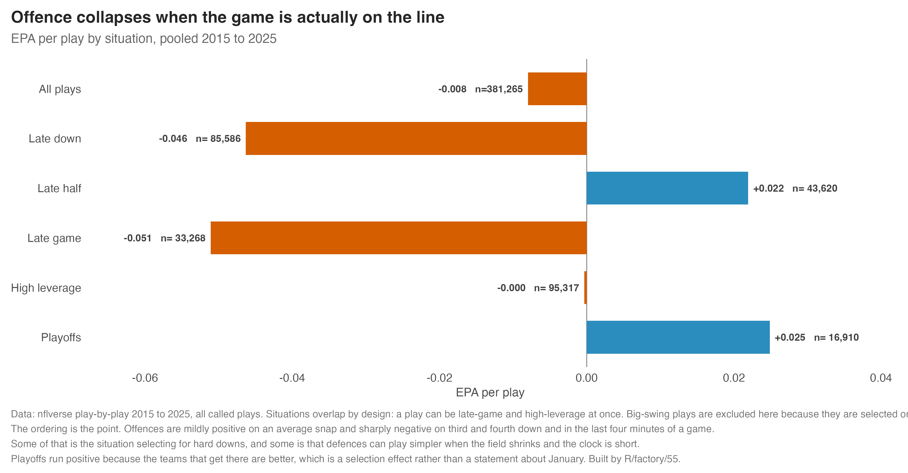
Then per coach. Reid, LaFleur, Sirianni and McDermott hold up best in the highest-leverage quarter of plays; Stefanski, McDaniels and Patricia fall away most. Read the left columns and right columns differently though: "all plays" rests on tens of thousands of snaps per coach, while playoff cells rest on a few hundred and can move on one afternoon.
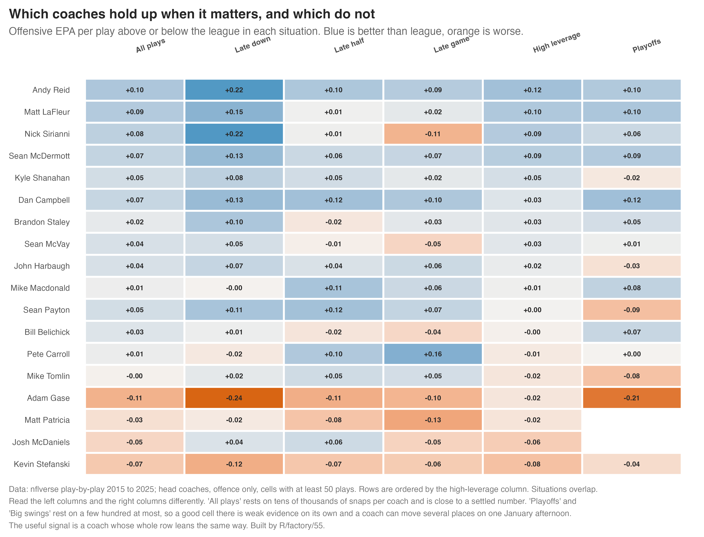
One thing deliberately left out of the comparison: plays with the biggest win-probability swings. That category is defined by what happened after the snap, so it selects for plays that worked and cannot be compared with the others. It is on the models tab as a description of which snaps decide games, not as a measure of anyone's performance.
His feedback, 13 August
Michael read the board and pushed on the word "predictable" three separate ways, caught a data-freshness problem, and added a new question. All of it is answered here.
Michael: "This is saying Sean Mcvay is more predictable?" ... "I feel like Kubiak was labeled as highly predictable by the public but not here?" ... "I feel like McVay is lauded for being unpredictable in the sense of lots of movement, ya? But what you're saying is he is highly predictable based on run/pass?"
Nick, on text: "Predictable might be a bad way to frame it... Gotta define predictable better."
He is right, and the fix is to split the word. There are two separate measures and both were being called predictable. CALL predictability asks whether a coach does what the down, distance, field position and score suggest. LOOK predictability asks whether his formation and personnel add anything on top of that. A coach can be high on one and low on the other, and conflating them is exactly what made the McVay answer sound wrong.

And the direct answer on his two names: on CALL predictability McVay is 69th percentile and Gary Kubiak is 70th. They are the same coach by this measure. Neither is extreme. The actual extremes are Andy Reid at 99th and Ben Johnson at 4th. McVay only looked remarkable on the old chart because he was labeled on it, not because he sits at an edge.
The catch we found on the way: the LOOK metric is badly contaminated by sample size. Its shrinkage pulls small-sample callers toward zero, so more career plays mechanically means a higher measured tell, r = 0.60 and R-squared = 0.36. Every look number on this board is now residualised for that. It matters: Kyle Shanahan drops from the 87th percentile to the 35th once you correct it, and Andy Reid from 81st to 32nd.
Michael: "Why is predictable play calling doing better?"
Nick: "It's kind of like hitting on 14 when the dealer shows a 10. Like just do what the book says. Ben johnson is having a lot of success being unpredictable in smart spots tho. There's a gray area like when you are holding 16 and the dealer has a 10."
That answer holds up when you plot it. The unpredictable corner is not full of geniuses outsmarting defenses. It is full of Adam Gase, Nathaniel Hackett, Luke Getsy and Chip Kelly, all with negative offensive EPA. Deviating from the situation for its own sake is mostly something bad coaches do. The one real exception is the man you named unprompted: Ben Johnson sits at the 4th percentile in predictability with +0.089 EPA per play, alone in that quadrant.

This is the cleanest version of the finding for the script: the book is right almost always, and the edge is knowing the handful of hands worth deviating on.
Michael: "So teams aren't that similar year to year in a way?"
They are more similar than you would think, and more similar on tendency than on quality. Across 228 consecutive caller-seasons, how predictable a coach calls it carries over at r = 0.46. How well his offense actually plays carries over at r = 0.37. Both persist, and the tendency persists more strongly than the performance. That is what makes this worth measuring at all: it behaves like a trait of the coach rather than only a description of last year.
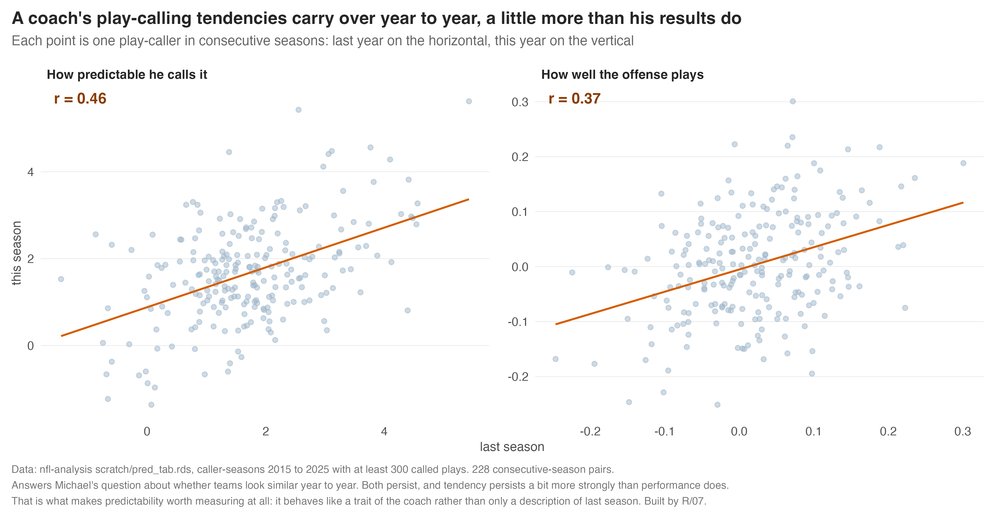
Michael: "He's high up and that says he predictable pre-snap?" ... "This says pre-snap on the y-axis?"
Nick: "Oh wow that might have changed recently. He evolves a lot year over year tbh. I'll dig into that more."
Dug into it, and Nick's instinct was right. Career-level, McVay really is near the top on formation tell, 96th percentile even after the sample-size correction. But there is no settled McVay to label. Season by season he ranges from 2.0 standard deviations above the league in 2018 to 1.3 below it in 2022, with a below-average 2024 and an ordinary 2025, and no trend in either direction. Any career number on him is an average of ten different coaches.
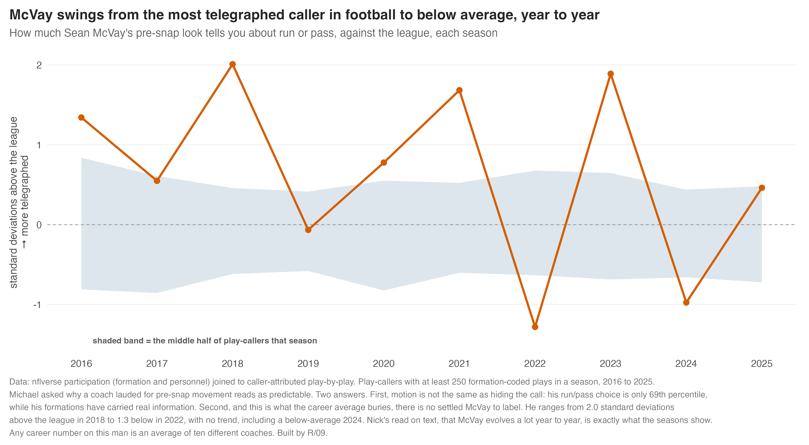
So the reputation and the number are both right: motion and shifts are not the same thing as hiding the call. He moves a lot before the snap and the personnel grouping still tells you plenty, at least in the years when it does.
Michael: "So Josh Allen blows against the blitz?" ... "And Kyle Murray is solid?"
Your reading was correct, which is how we found the bug. Far right on that chart meant blitzing this quarterback pays, and Allen was the furthest right in football at +58 points. He was so far out that the old chart had to squish him to +30 to keep the axis usable. A point that has to be capped to be drawn is not a finding, it is a warning.
Where it came from: the break-even divides by the gap between a quarterback's EPA under pressure and his EPA on a blitz that never got home. For Allen in 2022-23 that gap was -0.23, the closest to zero of any starter, so the ratio blew up. Rebuild it on four seasons instead of two and his gap settles to -0.50 and his payoff falls from +58 to +14, right next to Lamar Jackson and Jalen Hurts. Ordinary. The whole league range narrows from -7..+58 down to -16..+17, and the two-season estimates correlate with the four-season ones at only 0.33.
Kyler Murray moves too, from -7.5 to +1.4. He is not blitz-proof, he is neutral. Neither of the two names you picked out survives the refresh, which is a good argument for having picked them out.
And the card's headline died with them. "Defensive coordinators blitz on autopilot" rested on blitz rate being unrelated to blitz payoff, r = 0.06 with p = 0.71, a flat line. On 2022-2025 it is r = 0.32, p = 0.02. Coordinators do blitz the quarterbacks it pays to blitz. Weakly, but really. The old claim is retired.
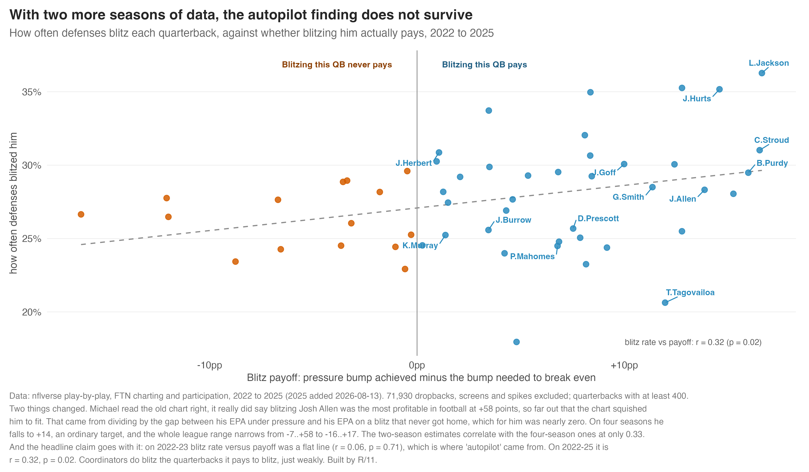
Worth saying plainly: this is the second finding on this board that the data refresh killed, and both were ours. That is the cost of running on a stale cache, and it is why the freshness note above matters more than it looks.
Why it is here: after the blitz headline died on refresh, every finding built on two seasons of charting had to be re-checked rather than assumed. Motion was the other one. It now runs on 63,652 dropbacks instead of 31,468.
The main claim holds. Motion's benefit against man versus against zone was +0.033 EPA on two seasons and is +0.028 on four, with the interval still straddling zero. Motion is not a man-coverage tax, and doubling the sample did not rescue it.
One piece did move. We had said defenses flatly do not check out of man when motion is on. Raw rates still say that, 37.9% either way. But adjusted for situation and both teams, motion is now worth 1.2 points less man coverage at p = 0.002, where the same test on two seasons was not detectable. So there is a real deterrence effect. It is just tiny, and nowhere near the "hidden half of motion's value" the claim was built to debunk.
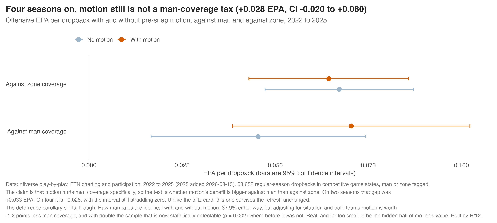
Michael: "Also I noticed a lot of them were 2022-2023 data, did you not have 2025?"
He was right and the cause was on our end. The formation charts stopped in 2023 and the charting-based ones in 2024 because our local copy of the data stopped there, not because the league does. nflverse now publishes participation through 2025 and FTN charting through 2025. Both are downloaded and the pre-snap work is rebuilt on 2016 to 2025, which is 276,834 formation-coded plays instead of the old window.
The full ledger, so you can check me: everything on this board now runs through 2025 except where the data itself stops. Play-by-play, spreads, contracts and Madden were already current. The formation work (2016-2023) and the charting work (2022-2023 and 2022-2024) were the stale ones and are rebuilt. Two of those rebuilds changed a finding: the blitz card above, and the deterrence half of the motion card. The one genuine wall left is tracking data for the deception video, which stops around 2022 for licensing reasons, not staleness.
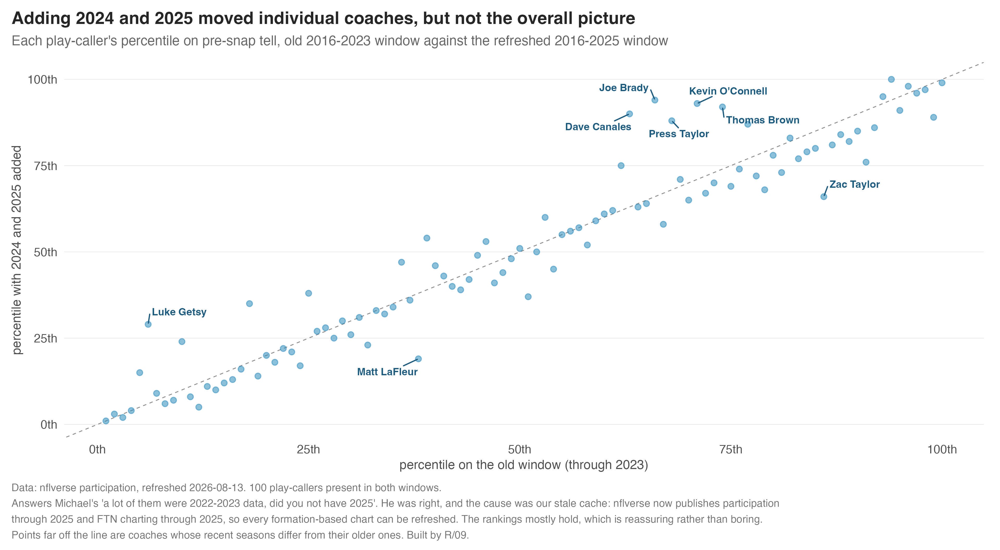
Still genuinely capped: tracking data for the deception work ends around 2022 and that is a licensing wall, not a stale cache. Everything else on this board now runs through 2025.
Michael: "Another thought - what about coaches that are the least/most by the analytics book? As in, what coach does what he should and what coach does not do what he should?"
Fourth down is the place to answer it, because every snap has a defensible right answer and the call belongs entirely to the head coach. Using the same model the public fourth-down bots run on, and counting only the clear-cut spots where going is worth at least 1.5 win-probability points more or less than kicking, there were 13,134 unambiguous decisions from 2018 to 2025.

Two things fall out of it that are worth the video. First, Mike Macdonald is the most by-the-book coach in football at 88%, which lands right on top of the Seahawks spine. Second, Bill Belichick is near the bottom at 73%, going on only 35% of the fourth downs where he should have. The greatest coach of the era was one of the least analytically obedient.
And the shape of the error is one-directional. Leaguewide, coaches get the obvious kicks right 98.8% of the time and the obvious go-for-its right 49.8% of the time. Nobody gambles when the math says kick. Half the time they kick when the math says gamble. The cowardice is entirely in one direction.

Michael: "Did the Seahawks outperform more than any other Super Bowl winning team (look at various metrics)?"
Close, but no: fourth of 27. Against the closing point spread, which already prices in the roster, the quarterback and the schedule, 2025 Seattle won 14 games where the market expected 10.8, a beat of +3.2 wins per 17. Only the 2003 Patriots (+5.5), the 2001 Patriots (+4.2) and last season's Eagles (+3.3, by six hundredths of a win) did better. It is still the 96th percentile of all 861 team-seasons since 1999.
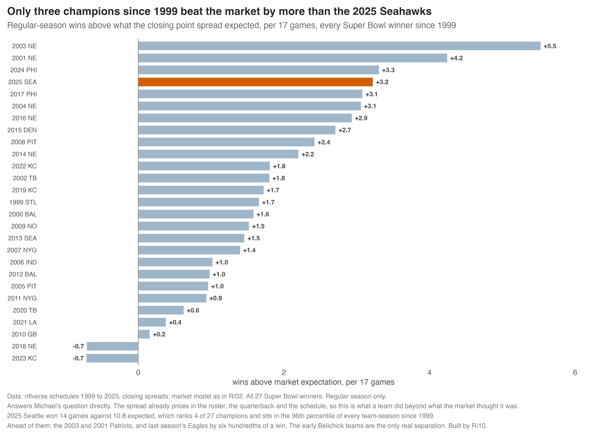
The useful framing for the script: the only clear separation above Seattle is early-era Belichick, and the same measure has 2018 New England and 2023 Kansas City winning it all while performing slightly worse than the market expected. Beating the spread is not what winning a Super Bowl requires. Seattle did both, which is rarer.
Michael: "So if I understand the conditional probability correct it is just looking at what teams have done across 305,827 plays. So for example on 2nd and 2 5 min left in the third quarter on x yardline, a team ran it 83% of the time"
That is exactly it, with one refinement. Every called play from 2015 to 2025 is dropped into a bucket defined by down, distance, field zone, score margin and half. Within each bucket we work out how often the league passes, then how often this particular caller passes. The gap is his predictability. The refinement is that small samples get pulled toward the league rate, so a caller with forty plays in a bucket is not credited with a tendency he has not really shown.
If you had to ask, the audience will too. Worth a fifteen-second explainer in the video, roughly in the words you used.
1 The Seahawks question
Your third bullet, and the reason for the video: how much is a team overachieving based on its player talent?
Michael: "I'm super biased. But there is a bit of magic to what the Hawks accomplished last year. Won without an elite qb…and seemingly without a lot of elite players. Very strange"
Found: the magic shows up in the numbers, and it is not small. The market, which knows the roster, the schedule, and the injuries, priced the 2025 Seahawks at 10.8 wins. They won 14. Only two teams in football beat their expectation by more last season, Liam Coen's Jaguars and Vrabel's Patriots. Whatever you felt watching them, the betting market felt it too, all year, and kept underpricing it. The roster version agrees: price every roster by its draft pedigree and Seattle sat 19th of 32, with the league's largest gap between what the talent predicted and what the team did.

The catch: "beat the market" and "well coached" are not the same sentence. The spread already prices the coach, so this measures surprise, not skill. The two cards below try to separate those.
Michael: "Coaching is a tough one like how do teams grade that?"
Found: one way to ask it is who wins more than the closing spread says they should, career after career. Answer: almost nobody. Of 157 coaches with at least a season of games since 1999, ten sit outside the 95 percent luck cone, and screening 157 people at that threshold hands about eight to luck all by itself. Worse for the genius theory: across 654 coach-seasons, beating the market one year has zero correlation with beating it the next (r = -0.03). The names above the cone are the ones you would guess, Belichick with 23 extra wins across 387 games, Tomlin, Dungy, and now Macdonald, but the population-level result is that the market already knows.
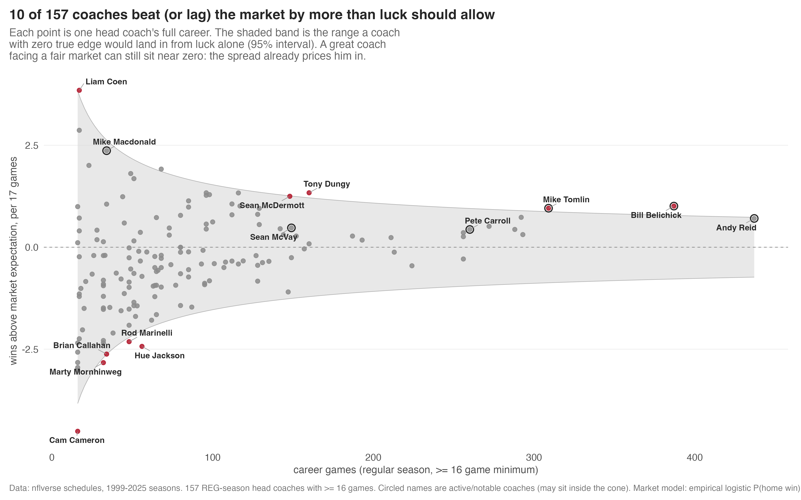
The catch: a coach exactly as good as his reputation shows up at zero here by construction. This is a lower bound on coaching skill, not a measure of it. It is on the board because it kills the lazy version of the ranking and forces the roster-talent version below.
Macdonald career so far: +4.7 wins above expectation in 34 games, third best rate among eligible coaches, and outside the cone. Two seasons. The persistence null is the reason not to crown him yet, and saying so out loud is what makes the Seattle segment credible.
Michael: "…like how much is a team overachiving based on their player talent"
Found: we valued every roster since 2003 by its draft pedigree, every player priced at his draft slot, and ran it under three different value charts (Jimmy Johnson, Chase Stuart, Fitzgerald-Spielberger) plus Madden 26 launch ratings as a fourth meter. Seattle's 2025 roster ranked 19th to 23rd of 32 depending on the meter, so "seemingly without a lot of elite players" reads about right. Then they outscored opponents by 11.2 points a game and sit above every one of the four fits, farthest of any team. Underneath that is a bigger surprise. Draft pedigree explains essentially nothing about team performance leaguewide, and that holds under all three charts (r rounds to zero across 736 team-seasons in each). The one meter that does see something is the video game: Madden's launch ratings correlate 0.39 with 2025 point differential while every draft chart sits at zero. The game grades what players became. The draft charts grade what teams paid.
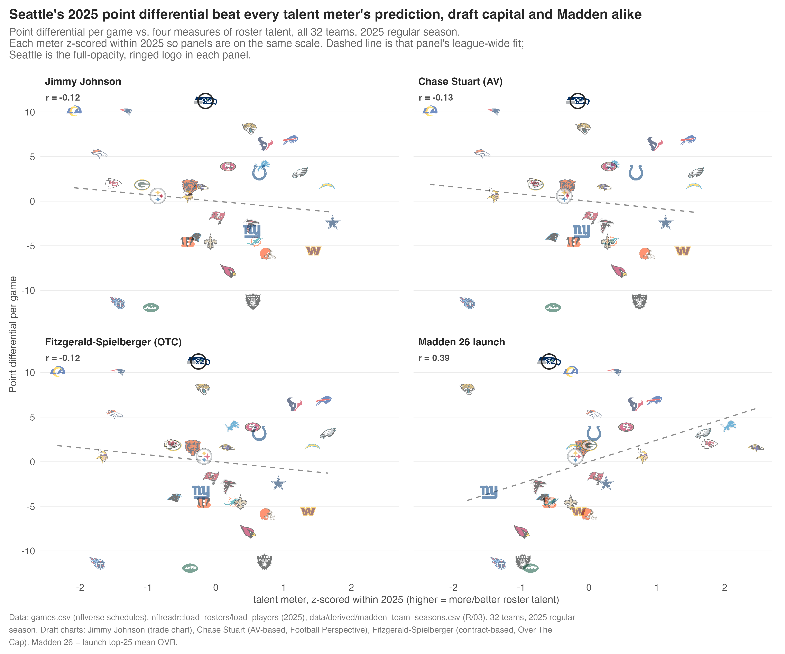
The catch: pedigree prices the pick, not the player. A star who went undrafted counts as zero and a top-five bust counts as a top-five pick, and the "recent drafts only" version of the measure actually runs negative because losing teams get the high picks. Sam Darnold also had a bounce-back year Seattle does not get credit for separating from coaching. Say all of that in the script; it is what makes the flat line believable instead of suspicious.
The ask: the WAR-style number, one value per coach.
Found: a mixed model over 736 team-seasons (2003 to 2025), performance against roster and QB pedigree, one effect per coach. The top of the list is Belichick at 4.2 wins per season above what his rosters predicted, then Dungy, John Harbaugh, Payton, McDermott, with Reid and Tomlin close behind. The bottom is Gus Bradley, Adam Gase, and Robert Saleh. Nobody fed the model a reputation and it recovered the consensus anyway. That is the check you want to pass before trusting it on anyone surprising. Macdonald lands at about 1.5 wins per season above talent, on two seasons, below the four-season bar the chart enforces. Preliminary by design.
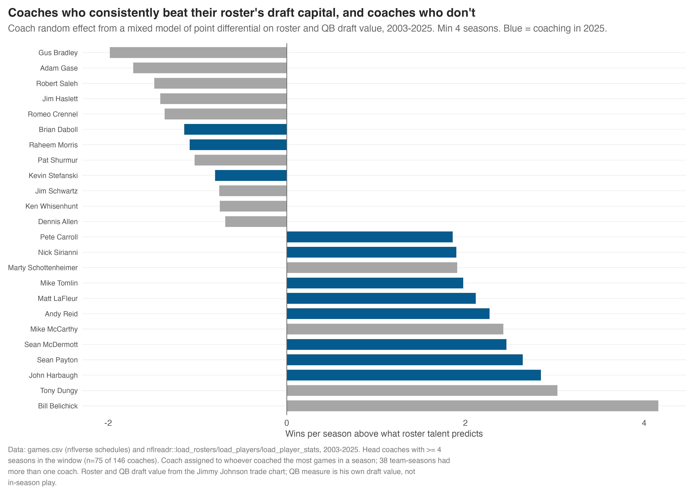
The catch: because pedigree barely predicts performance, this "talent control" controls for less than the name suggests. Read it as wins above a league baseline with a QB nudge, not wins above a true talent measure. The chart choice does not matter: refit with the Stuart chart instead of Jimmy Johnson and the coach effects correlate 0.999. It also credits a whole season to whoever coached most of it (38 of 736 seasons had a midseason change). The better talent meter is the next card.
Nick: "draft capital as a proxy for team talent is biased in a lot of ways and not really great. a better way would be to quantify team talent by looking at contract value"
Found: right. We priced every roster by its contracts, each player's APY as a share of the cap in his signing year, top 25 per team, 2012 to 2025 (contract coverage gets thin before that). Payroll is a real talent meter where draft capital was not: r = 0.30 with point differential, against zero for every draft chart, still under Madden's 0.43. And it sharpens Seattle instead of softening it. The 2025 Seahawks ranked 30th of 32 by paid talent and beat the contract model by more than any team in the league, 14.3 points a game above the fit. Sam Darnold cost 12 percent of the cap, 15th among the 32 primary starters, the middle of the market. "Won without an elite QB" checks out by price, and "without a lot of elite players" checks out even harder by payroll than by pedigree.
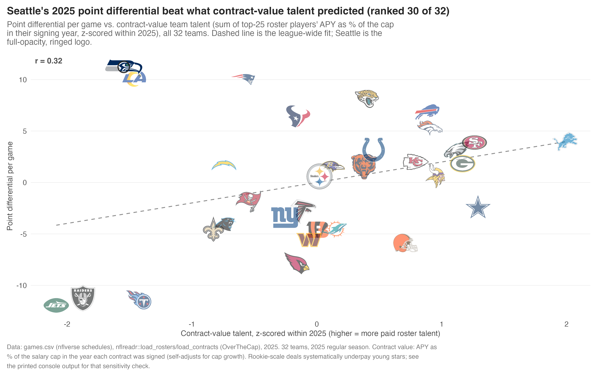
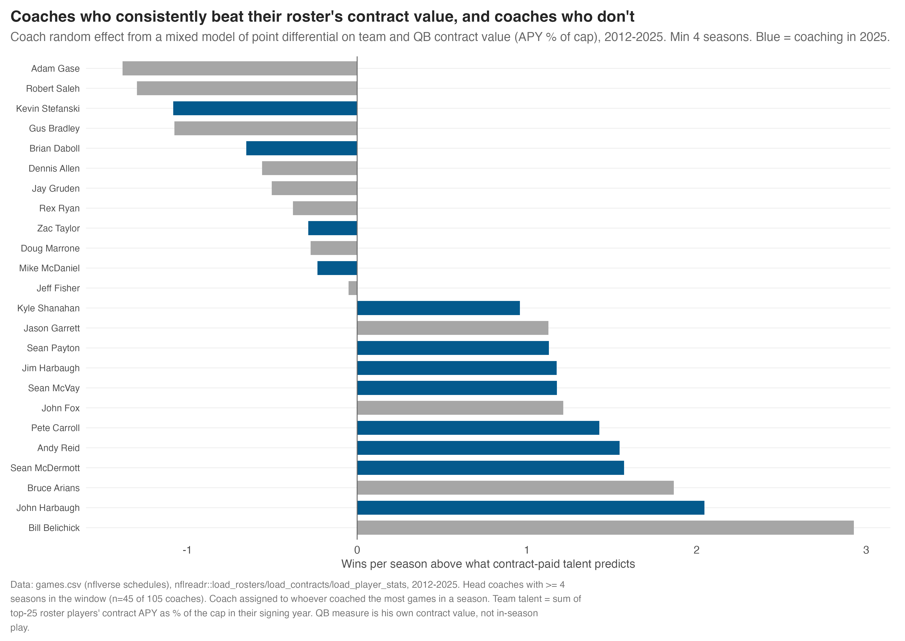
The catch: contracts carry their own biases, in the opposite direction from draft charts. Rookie-scale stars read as cheap, and a washed $30M veteran counts like a $30M MVP. League-wide the rookie-deal bias barely moves the fit, but Seattle specifically has the second-highest rookie share of its top-25 payroll, so part of its outlier status is the meter underrating young players, consistent with the bias though one team cannot prove it. The window is also 2012 to 2025, so this leaderboard is not directly comparable to the 2003-to-2025 draft version. And the two models' coach effects correlate 0.91 mostly because both baselines are weak, not because the meters agree on who has talent.
Michael: "- WAR based on Madden ratings or something…"
Found: we pulled launch ratings for every team, 2017 through 2025, from a cleaned public rebuild of the Madden data. The game does know something: a roster's launch rating explains about 19 percent of the variance in wins (r = 0.43), which makes it a real but weak talent meter, and that weakness is worth saying out loud in the video. Madden 26 rated the 2025 Seahawks 23rd of 32 and priced them at 7.5 wins. They won 14. The coach view over nine seasons puts DeMeco Ryans, McVay, Payton, McDermott, and Reid on top of the video game's expectations, and Doug Marrone, Saleh, Patricia, and Gase under them.
The catch: Madden ratings partly bake in last season's results, so this is not an independent talent measure, and nine seasons is a short window. Talent here means the average of a team's top 25 launch ratings.
Production note for the script: EA named two different games "Madden 25", and the ratings archive everyone links serves the 2013 one. The chart above nearly shipped with Calvin Johnson on the 2024 Lions.
2 Playcalling
"For this, idk if you have ever looked into or thought about how to grade play callers." Play callers attributed per team-game, 1999 to 2025, offensive and defensive, via the samhoppen public dataset.
Michael: "Topic 1 - Ranking Coaches and play callers in some way… - Playcalling"
Found: rank 80 play-caller careers by how guessable their calls are and the naive version tells the story everyone believes: unpredictable callers run better offenses (r = +0.33). That is an illusion of game script. Losing teams have to pass, which makes them predictable and bad at the same time. Control for the situation, down, distance, field zone, score, and half, across 305,827 called plays, and the sign flips: the more predictable caller runs the better offense (r = -0.37). Andy Reid gives away about three extra correct guesses per hundred plays and has the best offense of the era. Great callers are not hiding the play. They are running plays that work when you know they are coming.
The catch: this is a correlation across careers, not a play-level causal claim, and "predictable" here means guessable within a situation relative to league habits, not "runs on every first down."
The obvious objection: predictable callers might only look good because they have Mahomes.
Found: the link survives controlling for quarterback accuracy at about two thirds of its strength, and it remains significant. Predictability is also a stable trait of the caller: it carries season to season (r = 0.48), and it carries almost as well when the caller changes quarterbacks as when he keeps one. It is his signature, not his QB's.
The comfortable theory: good callers can afford predictable calls because they disguise them pre-snap.
Found: the formation data (2016 to 2023) says no. The corner of the chart the theory needs, callers who are predictable in their calls but hard to read from formation, is empty. The apparent disguise effect collapses once quarterback quality enters the model. The conclusion stays the uncomfortable one: the plays are simply good.
Why it is here: the fingerprint grids are the animation-ready version of the predictability story, one panel per famous caller, showing exactly where each one becomes guessable, plus the 2025 callers ranked so the video can be current.
Nick, back in July: "Was just looking into some coaching stuff. Establish the run is bs"
Found: running early sets up nothing. A pass after a run on first-and-10 gains 0.015 EPA less than a pass without the setup, which is zero. Running a lot early does not open up late passing, and running well early does not either: the correlation with second-half value lands on zero whether you score it in EPA, success rate, or win probability. Meanwhile the map of actual game states shows passing beats running nearly everywhere the league still runs, by up to 0.22 EPA per play in late, close, first-down spots. The run matters in short yardage and almost nowhere else.

The asset: QUOTES.md in the repo has 18 verbatim, dated, sourced coach quotes preaching the establish-the-run gospel, with a documented exclusion list for the famous quotes that could not be verified. Ready-made for the cold open of that segment.
Michael's standard, from the birthday video: "Not calling that out makes the argument less fair."
Found: we tested the three best arguments run-first coaches actually make. Light boxes: real, but backwards. Runs do work against light boxes, and light boxes are earned by passing more, not by running more. Wearing the defense down: does not happen. Late-game runs succeed at the same rate as first-quarter runs. Cold weather: the one kernel of truth. December football shifts things toward the run, modestly.

The catch: the box-count data only exists 2016 to 2023, and success rate is the metric there, not EPA. The direction is consistent across both.
3 Adjustments
Your first bullet, verbatim: "- Adjustments". Everyone believes some coaches own halftime. Nobody had checked whether that is a repeatable skill.
Michael: "- Adjustments"
Found: the halftime adjuster half exists. Take every game since 2000, strip out mean reversion and garbage time, and ask whether a coach's second-half edge repeats across his career. It does: odd games predict even games at r = 0.48, and 44 of 159 coaches sit outside the noise cone where chance would put eight. Then look at who is on the leaderboard: McDermott, Dungy, Payton, Belichick, Cowher. That is not a list of adjusters, it is a list of good coaches, and the numbers agree: the "adjustment" score correlates 0.81 with plain point margin. Whatever this measures, it is mostly having the better team.

The catch: this test cannot separate "adjusts well at halftime" from "good team that also wins second halves." Isolating a true adjustment skill, if one exists, needs opponent and talent controls this measure does not have. And a single half is nearly all noise (the league model explains 1.4 percent of any one game); the repeatable part only appears after averaging dozens of games.
Seattle angle: Macdonald sits 46th of 170 with 34 games, inside the cone, too early to say anything. Carroll is 26th over 244 games and outside the cone, which under the confound above most likely reads "his teams were good," not "he owned halftime."
4 Game management
"- whatever else you think." The decisions coaches make with the game on the line, which is where the audience thinks coaching lives.
Why it is here: every fan believes Andy Reid is a clock-management disaster. This is the card that picks that fight on purpose.
Found: there are two timeout sins, and they belong to different coaches. Burning them early: Mike Martz is the all-time champion, one extra burned timeout per game over his era, double the league rate every season of his career. Dying with them unused in a close loss: Norv Turner did it in 11 of his 31 close fourth-quarter losses, 35 percent against a league rate of 15. And Reid? Four games out of 61. The best large-sample record in football at the thing he is famous for being bad at. Mike Shanahan is the only coach in the worst eight of both sins. The current-coach view puts Jim Harbaugh, LaFleur, McVay, and Payton on the burn list.
The follow-up question: fine, but does any of it matter on the scoreboard?
Found: less than the yelling suggests. Teams entering the two-minute drill with all three timeouts score 0.7 more points than teams with none, but most of that gap is clock selection, not the timeouts. Control for when they get the ball and the gap drops to about a quarter point across all three timeouts, which does not clear statistical significance. The line for the script: the sin is dying with them, not the price of one.
The belief: every broadcast treats the icing timeout as free psychology.
Found: across 2,221 pressure field goals since 2000, icing shaves about 2.9 points of make probability off the kick, and the confidence interval still crosses zero (minus 7.0 to plus 1.2). A quarter century of football cannot tell you it does anything. And no coach has cracked it: 20 of the 21 coaches with enough icing calls to evaluate sit inside the pure-luck cone. Matt LaFleur ices the most, two thirds of his opportunities, for an effect nobody can distinguish from nothing.
Why it matters: Carroll is the one coach outside the icing luck cone, and he is a Seahawk, so the video will want him to be a genius.
Found: he is the fluke the math predicts. Simulate worlds where icing does nothing and screen 21 coaches in each one: the luckiest coach in the screen beats expectation by about Carroll's margin roughly once a decade. His edge rests on eight kicks. This card exists so the video does not build a segment on a coincidence, and because "we checked our own guy and he is luck" is exactly the credibility the Seattle segment needs.
Why it is here: the quietest game-management edge we found, and nobody talks about it.
Found: on long field goals outdoors, attempt rates fall from 50 percent in calm air to 34 percent in an 11 to 15 mph wind, and that drop is the skill. The kicks coaches do attempt in wind go in at roughly the same rate as ever. The smart coaches are not employing better kickers. They are declining worse kicks.
Michael: "Ranking Coaches and play callers in some way" includes the defensive callers, who are in the attribution data too.
Found: pressure is what matters, and pressure pays the same whether it comes from a blitz or a four-man rush (minus 0.31 vs minus 0.29 EPA). A blitz that fails costs more than a rush that fails (plus 0.30 vs plus 0.22 allowed). So blitz rate should track opponent vulnerability. It does not: across coordinators, blitz rate is uncorrelated with the payoff (r = 0.06). Coordinators blitz who they are, not who they play.
Superseded. This ran on 2022-23 only. Rebuilt on 2022-2025 the relationship is r = 0.32 (p = 0.02), not a flat line, so the autopilot claim does not hold. See "So Josh Allen blows against the blitz?" near the top of this board.
5 Topic 2, Deception. Parked, not dead
"Topic 2 - Deception." Separate video. Our tracking-data access ends around 2022, so this one needs creative work off play-by-play and charting data. What already exists is below.
The belief: pre-snap motion "reveals the coverage" and punishes man.
Found: across 31,468 charted dropbacks in 2022 and 2023, motion against man coverage adds 0.03 EPA per play, indistinguishable from zero. The deterrence story fails too: defenses play man 35.8 percent of the time when the offense motions and 35.4 when it does not. They are not scared.
Ran on 2022-23. Rebuilt on 2022-2025 near the top of this board: the main finding holds, the deterrence corollary is now a small but real 1.2 points.
Where this goes: a first solid brick for the deception video, and a warning that its intuitive claims will need the same treatment as establish-the-run got.
Michael: "Topic 2 - Deception"
Where it stands: we have FTN charting for 2022 to 2024 (play action, screens, motion), the pre-snap disguise machinery already built, and no player tracking after 2022. The playbook: play-action value over time, whether disguise shows up anywhere as a measurable edge, and the fake-out plays that live in play-by-play text (flea flickers, reverses, philly specials). Parked until the coaching video ships.
Ranked, with what exists and what it would take
Build the video on one of these
The idea: open on the 2025 Seahawks, ask what the market missed, and let the answer walk through the whole report card: talent models, playcalling, game management, and the luck cones that stop anyone getting carried away.
Why it is best: it is your own hook, it is current, and every segment on this board plugs into it.
Have: market model, roster model, playcalling suite, game management suite. Need: a decision on how hard to lean on a two-season coach, and ideally the talent meter upgrade below.
The idea: the alternative spine. Four beliefs everyone holds about coaching (establish the run, icing, the unpredictable genius, the halftime adjuster), each dies on camera, and what survives is the actual report card.
What exists that you have never seen: four finished long-read drafts and two rendered motion-graphics videos already sit in the July repo, including a combined piece titled "Against the Book". They are drafts of exactly this structure.
Have: the four segments, written and charted. Need: your read on whether myth-autopsy or Seahawks-first is the stronger frame.
Strong segments inside a bigger video
The idea: one table, every active head coach graded on the dimensions this board measures: market performance, talent-adjusted performance, timeout discipline, icing discipline, wind savvy, and their callers' predictability. The literal thumbnail.
Have: every input on this board. Need: a composite design that does not pretend false precision, and a decision on weights, which is a video beat in itself.
The idea: Nick's original "In game decision making" text as its own segment: timeouts, icing, wind, and fourth downs in one grade per coach.
Have: three of the four components. Need: the fourth-down piece, which is deliberately absent below.
Worth keeping in the back pocket
The idea: parked on the main board above with its inventory. The motion and disguise results carry over as its first two segments.
The idea: draft capital measures what teams paid, not what players became, and it explains nothing. The contract-value version is now built and on the board (r = 0.30, both model terms significant). The remaining upgrades if the measure needs more teeth: snap-weighted approximate value and PFF grades.
Have: the contract model, R/06. Need: AV or PFF only if Michael pushes past payroll.
The idea: rookie usage beats draft slot as a predictor within two months. It is a roster-building story, not a coaching story, and it slots into the "building a team around a QB" preview idea you floated on Aug 3.
What I would not build
Why not: Ben Baldwin's fourth-down model is public, famous, and already the default reference. We would be re-deriving someone else's headline. Use it as an input to the decision GPA and credit it; do not present it as a discovery.